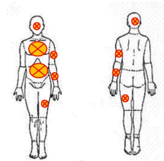
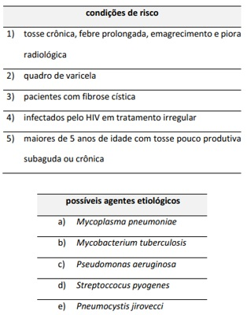
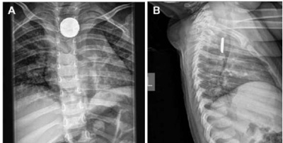
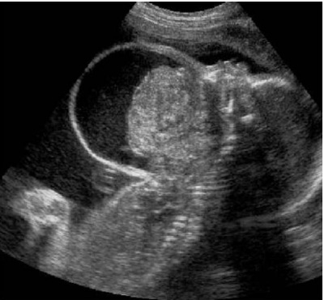
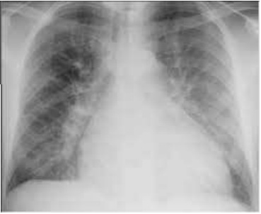
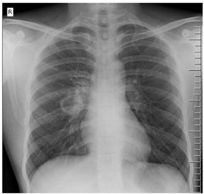
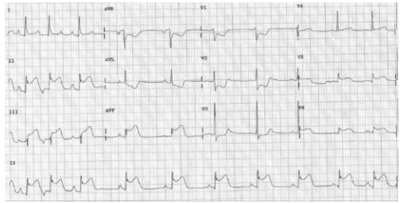

Questão 1 · Fissuras Anais · Cirurgia · 4000185293Entre as alternativas a seguir, assinale aquela que apresenta uma alteração para a qual, ao exame proctológico, está indicado o uso de pomada tópica de Diltiazen a 2% na região anal.
A sangramento anal com dor contínua há 8 semanas, associado à presença de plicoma, ulceração na linha média anterior, hipertonia esfincteriana e papila hipertrófica
B sangramento anal sem dor há 6 semanas, associado à presença de abaulamento perianal com saída de secreção purulenta e ulceração na linha média posterior
C sangramento anal sem dor há 3 semanas, associado à presença de abaulamento anal durante as evacuações que regride espontaneamente
D sangramento anal com dor durante as evacuações há 3 semanas, associado à presença de ulceração superficial na linha média posterior e papila hipertrófica
E sangramento anal com incômodo local há 8 semanas, associado à presença de múltiplas lesões verrucosas na margem anal
Questão 2 · Gastroenterologia · 4000185292Paciente do sexo feminino, de 53 anos de idade, sem comorbidades, assintomática, sem antecedente familiar de câncer colorretal, realizou exame de sangue oculto nas fezes com guáiaco que veio positivo, sendo indicada a realização de colonoscopia. A colonoscopia evidenciou dois pólipos sésseis, de 0,5 cm cada, localizados no cólon direito (ambos adenoma tubular de baixo grau), um pólipo séssil de 0,8 cm localizado no cólon transverso (adenoma túbulo-viloso de alto grau) e dois pólipos pediculados no sigmoide de 1,2 cm e 1,5 cm (ambos adenoma tubular de baixo grau). Foi realizada polipectomia, com margens livres de todos os pólipos. Com base nesse caso clínico, assinale a alternativa que apresenta o seguimento adequado dessa paciente.
A realizar exame imunoquímico fecal anual e, se alterado, solicitar colonoscopia
B repetir a colonoscopia em 3 anos
C realizar exame de sangue oculto nas fezes com guáiaco anual e, se positivo, solicitar colonoscopia
D repetir a colonoscopia em 1 ano
E repetir a colonoscopia entre 5 e 7 anos
Questão 3 · Tratamento das Hérnias Inguinais · Hérnia Inguinal · Apresentação Clínica · 4000185291Em relação às hérnias inguinocrurais em adultos, julgue os itens a seguir. I. O tratamento cirúrgico é indicado para homens sintomáticos com hérnia inguinocrural. II. O tratamento cirúrgico é indicado para mulheres não gestantes com hérnia inguinocrural, seja ela sintomática ou assintomática. III. O diagnóstico da hérnia inguinocrural deve ser feito pelo exame clínico. IV. O ultrassom deve ser o exame inicial em casos em que a história clínica é condizente com hérnia e o seu exame físico é vago. V. Os diagnósticos diferenciais incluem linfonodomegalia, hérnia incisional, hidrocele e pubeíte. Assinale a alternativa correta.
A Apenas os itens I e III estão certos.
B Apenas os itens II e V estão certos.
C Apenas os itens I, II e IV estão certos.
D Apenas os itens III, IV e V estão certos.
E Todos os itens estão certos.
Questão 4 · História Natural da Doença · Tratamento Cirúrgico · 4000185290Uma paciente de 45 anos de idade, assintomática, com índice de massa corpórea (IMC) igual a 34, sem comorbidades, compareceu ao consultório após ter sido diagnosticada, por meio de ultrassom de rotina, com colelitíase, tendo o ultrassom evidenciado a presença de microcálculos (menores que 0,5 cm). Nesse caso clínico hipotético,
A a colecistectomia está indicada devido ao risco de pancreatite aguda.
B a indicação cirúrgica é relativa, pois o risco de complicações é menor que o risco da operação.
C recomenda-se não operar e iniciar dieta pobre em colesterol e ácidos graxos, pois os cálculos são constituídos, na maioria dos casos, por colesterol puro, além de traços de ácidos graxos e fosfolipídios.
D indica-se a colecistectomia após a realização de colangiopancreatografia retrógrada endoscópica, para excluir a presença de microcoledocolitíase.
E a colecistectomia está indicada, devido ao alto risco de desenvolvimento de colecistite aguda e câncer de vesícula.
Questão 5 · Def inição e Etiologias · Diagnóstico · Manif estações Clínicas · 4000185289Um paciente de 75 anos de idade, hipertenso controlado, com queixa de sangramento anal há 6 meses após as evacuações e alteração do hábito intestinal, compareceu ao hospital. O exame proctológico evidenciou a presença de mamilos hemorroidários grau 3 e tumoração endurecida, friável, sangrante, indolor, ocupando 1/3 da circunferência do reto, a 5 cm da borda anal. Nesse caso hipotético, a melhor conduta é solicitar
A retossigmoidoscopia, CEA (antígeno carcinoembrionário), radiografia de tórax e ultrassonografia de abdome superior.
B colonoscopia, CEA, PET-CT e exames pré-operatórios.
C exames pré-operatórios e agendar biópsia da lesão retal no centro cirúrgico a ser realizada durante a hemorroidectomia.
D colonoscopia e, a depender do resultado da biópsia, prosseguir com a investigação diagnóstica.
E colonoscopia, CEA, tomografia de tórax e abdome e ressonância magnética da pelve.
Questão 6 · Nef rologia · 4000185288Uma mulher de 78 anos de idade, com histórico de múltiplas cirurgias prévias, apresenta quadro de abdome agudo obstrutivo. Foi submetida a uma laparotomia exploradora com extensa lise de aderências, procedimento que teve duração de 7 horas. Recebeu 2 litros de cristaloide durante a cirurgia e urinou 200 mL. A creatinina sérica teve um incremento de 0,6 mg/dL no dia seguinte. Outros dados da paciente: PA = 90 mmHg × 60 mmHg; FC = 110 bpm. Assinale a alternativa que apresenta a conduta que deve ser evitada nesse caso hipotético.
A descartar obstrução de sonda vesical
B verificar valor da hemoglobina sérica
C calcular a fração de excreção de sódio
D administrar volume
E iniciar amina vasoativa para manter a pressão arterial média em torno de 65 mmHg
Questão 7 · SOFA score · 4000185287Cada uma das alternativas a seguir apresenta um paciente e algumas de suas informações clínicas. Entre essas alternativas, assinale aquela que apresenta o paciente com maior gravidade e provável quadro de sepse.
A mulher de 27 anos de idade, após litotripsia para nefrolitíase, afebril, com FC de 102 bpm e PA igual a 90 mmHg × 40 mmHg, com confusão mental e com contagem de leucócitos igual a 9.000/µL
B homem de 45 anos de idade, com pancreatite, temperatura igual a 38 o C, FC igual a 110 bpm, PA de 110 mmHg × 60 mmHg e contagem de leucócitos igual a 14.000/µL
C mulher de 53 anos, em pós-operatório imediato de ressecção de tumor de cólon, que está taquicárdica e requer intubação orotraqueal
D senhora que reside em casa de repouso, de 84 anos de idade, com cultura de urina positiva para
E homem de 18 anos de idade que apresentou quadro de apendicite gangrenosa, estando agora no pós-operatório imediato de uma apendicectomia laparoscópica, febril (39º C) e taquicárdico (FC = 130 bpm), com PA igual a 140 mmHg × 70 mmHg
Questão 8 · Cicatrização de Feridas · 4000185286Uma mulher de 55 anos de idade foi submetida a reconstrução mamária com músculo reto abdominal (TRAM) bilateral após mastectomia radical. Está em programação de radioterapia pós-operatória. Com base nesse caso clínico, assinale a alternativa correta, quanto à cicatrização de feridas dessa paciente.
A A presença de leucócitos com contagem de 100 por centímetro quadrado retarda a cicatrização de feridas.
B A denervação tem um efeito deletério na contração da ferida e na epitelização.
C Quimioterapia iniciada 10 a 14 dias após a cirurgia tem pouco efeito sobre o estado final da cicatrização.
D A isquemia tecidual é o principal componente do dano tecidual causado pela irradiação.
E A radioterapia pós-operatória deve ser adiada por, pelo menos, 4 a 6 meses após a cirurgia, para diminuir a incidência de complicações da ferida.
Questão 9 · Estimativa da Superf ície Corpórea Queimada e Circulação · Manejo Préhospitalar · Via Aérea · 4000185285Paciente, masculino, de 45 anos de idade, vítima de incêndio de grandes proporções em sua casa, tendo permanecido por mais de duas horas dentro do local, foi resgatado e levado ao pronto-socorro. Apresenta desconforto respiratório e queimaduras profundas, nas áreas indicadas na figura a seguir por meio de um círculo com um “X”. S. M. Carvalho, I. A. Kuhnen e M. J. L. Pereima. Protocolo de padronização do per l infeccioso de crianças internadas na unidade de queimados. In: Revista Brasileira de Queimaduras, 12(2), p. 118-127, 2013 (com adaptações). Assinale a alternativa que apresenta, respectivamente, o percentual de superfície corpórea queimada (SCQ), de acordo com o método de Wallace, e a melhor conduta inicial de tratamento, nesse caso hipotético.

A 40%; intubação orotraqueal, reposição volêmica de 2 mL de ringer lactato × peso corporal × SCQ
B 45%; intubação orotraqueal, reposição volêmica de 2 mL de ringer lactato × peso corporal × SCQ, limpeza e curativo das áreas queimadas, analgesia, antibioticoterapia, transferência para centro especializado em tratamento de queimados
C 45%; intubação orotraqueal, reposição volêmica de 5,2 mL de ringer lactato x peso corporal x SCQ, curativo das áreas queimadas, analgesia
D 50%; cateter nasal com oxigênio úmido 5 L/min, curativo das áreas queimadas, transferência para centro especializado em tratamento de queimados
E 50%; CEPAP ou máscara de O₂ não reinalante 15 L/min, curativo simples das áreas queimadas, analgesia
Questão 10 · Trauma Raquimedular · 4000185284Paciente de 35 anos de idade, masculino, vítima de acidente com colisão de sua moto contra um caminhão, politraumatizado, com suspeita de trauma raquimedular, foi levado ao hospital. Com base nesse caso clínico, assinale a alternativa correta, com relação ao trauma raquimedular.
A A associação de hipotensão e vasoconstrição caracteriza o choque medular.
B A presença do reflexo bulbocavernoso afasta lesão medular.
C A avaliação neurológica e funcional define o prognóstico, além de procurar apontar com exatidão o nível neurológico da lesão e o grau de comprometimento funcional.
D Em uma avaliação primária, deve-se identificar se a causa do choque é hipovolêmico ou neurogênico, embora o tratamento para ambos seja a administração de grande reposição volêmica.
E O choque medular é uma disfunção autonômica que interfere na manutenção da estabilidade hemodinâmica, resultando em bradicardia, vasoconstrição, hipotensão e aumento da capacidade venosa a paralisia flácida.
Questão 11 · Manif estações Clínicas e Exame Físico · 4000185283A tríade de Charcot caracteriza-se por
A febre, icterícia e dor em hipocôndrio direito, estando presente em pacientes com colangite aguda.
B febre, dor em fossa ilíaca direita e icterícia, estando presente em pacientes com apendicite aguda.
C dor em hipocôndrio direito, icterícia e vômitos, estando presente em pacientes com pancreatite aguda.
D febre, icterícia e dor em hipocôndrio direito, estando presente em pacientes com colecistite aguda.
E icterícia, febre e leucocitose, estando presente em pacientes com colangite aguda e colecistite aguda.
Questão 12 · Manif estações Clínicas e Exame Físico · Gravidade · 4000185282Quanto à Pêntade de Reinolds, assinale a alternativa correta.
A Seus sintomas são febre, icterícia, dor em hipocôndrio direito, hipotensão e vômitos.
B Seus sintomas são febre, icterícia, dor em hipocôndrio direito, rebaixamento do nível de consciência e hipotensão.
C Ela representa sepse em quadros de colecistite aguda.
D Nesse caso, o tratamento da causa base é sempre cirúrgico.
E Ela sempre está presente em pacientes com colangite aguda.
Questão 13 · Manif estações Clínicas e Exame Físico · Exames Complementares · 4000185281Paciente do sexo feminino, de 35 anos de idade, com queixa de dor abdominal há 5 dias, iniciada em epigastro, agora localizada em fossa ilíaca direita, associada a inapetência e febre não medida, está recebendo atendimento em um hospital. A paciente nega corrimento vaginal. Exames revelaram o seguinte: HB = 12,4; leucograma = 14.900, com desvio à esquerda; urina 1 com leucocitúria; e nitrito negativo. O exame físico revelou dor à palpação de fossa ilíaca direita, com defesa localizada neste quadrante. A respeito desse caso hipotético, assinale a alternativa correta.
A Trata-se de uma infecção de trato urinário; deve-se prescrever antibioticoterapia domiciliar e dar alta à paciente.
B Trata-se de gastroenterite aguda, e a paciente, provavelmente, desenvolverá quadro diarreico nos próximos dias; o tratamento indicado no caso é antiespasmódico e hidratação.
C Trata-se, provavelmente, de apendicite aguda, diagnóstico que pode ser confirmado por exame de tomografia.
D Trata-se de ureterolitíase; nesse caso, deve-se solicitar avaliação de urologia e dar alta da cirurgia geral.
E Trata-se, certamente, de infecção ginecológica, devendo-se, nesse caso, prescrever antibiótico via oral e creme vaginal e dar alta hospitalar; caso a paciente apresente melhora dos sintomas, deve procurar avaliação de ginecologista.
Questão 14 · Classif icação de Forrest · 4000185280Com relação à classificação de Forrest para úlceras pépticas com sangramento, assinale a alternativa correta.
A Forrest 2A diz respeito a úlceras com coágulo aderido.
B Forrest 1B diz respeito a úlceras com coto vascular visível.
C Forrest 3 diz respeito a úlceras com pontos de hematina.
D Forrest 2B diz respeito a úlceras com sangramento em babação ou porejamento.
E Forrest 1 A diz respeito a úlceras com sangramento em jato.
Questão 15 · Def inição e Etiologias · Def inição e Etiologias · 4000185279Quanto às hemorragias digestivas, assinale a alternativa
A Melena significa sangue digerido nas fezes.
B Enterorragia ou hematoquezia significa presença de sangue vivo nas fezes.
C Hematêmese significa vômitos com sangue.
D Pacientes que apresentam hematêmese certamente apresentam hemorragia digestiva alta.
E Pacientes que apresentam melena certamente não apresentam hemorragia digestiva baixa.
Questão 16 · Gastroenterologia · 4000185278Acerca de pancreatites agudas, assinale a alternativa
A Para o diagnóstico de pancreatite aguda, deve-se considerar o quadro clínico característico, elevação de amilase e(ou) lipase pelo menos três vezes acima dos níveis séricos normais, tomografia computadorizada com contraste endovenoso evidenciando alterações pancreáticas; pelo menos dois desses critérios devem estar presentes.
B A única forma de se considerar uma pancreatite aguda grave é se houver mais que 30% de necrose de parênquima pancreático visualizado em tomografia computadorizada com contraste; na ausência de necrose, a pancreatite sempre deve ser considerada leve.
C A principal etiologia da pancreatite aguda é biliar.
D Também são causas de pancreatite aguda a hipertrigliceridemia e a hipercalcemia.
E A ecoendoscopia é um exame de imagem importante durante investigação das causas de pancreatite aguda.
Questão 17 · Abdome Agudo Obstrutivo · 4000185277A respeito do abdome agudo obstrutivo (AAO), assinale a alternativa
A AAO classifica-se como alto ou baixo, de acordo com o distúrbio metabólico decorrente do quadro de obstrução.
B Obstrução intestinal em alça fechada é considerada uma emergência cirúrgica.
C Volvo de sigmoide e bridas são causas extrínsecas de obstrução intestinal.
D Neoplasias gástricas ou estenoses antropilóricas não são causas de AAO, pois não provocam parada de eliminação de gases e fezes.
E Algumas vezes, a primeira manifestação de uma neoplasia de cólon é o quadro obstrutivo.
Questão 18 · Trauma Cervical · Introdução · 4000185276Um paciente, vítima de ferimento penetrante por arma branca em zona II cervical, foi levado ao pronto-socorro por transeuntes. A avaliação primária era a seguinte: vias aéreas pérvias; murmúrio vesicular presente bilateralmente; frequência cardíaca de 95 batimentos por minuto, tempo de enchimento capilar menor que 3 segundos, pulso cheio; pupilas isocóricas e fotorreagentes, escala de coma de Glasgow 15; ferimento em zona II cervical à direita de aproximadamente 2,0 cm, sem sangramento ativo, sem outros ferimentos. Não havia saída de ar do ferimento. Considerando esse caso clínico, assinale a alternativa correta, com relação à melhor conduta referente ao quadro clínico apresentado por esse paciente.
A O paciente deve ser submetido a exploração digital do ferimento; caso o músculo platisma tenha sido penetrado, o paciente deve ser submetido a endoscopia digestiva e ultrassom Doppler dos vasos cervicais, para avaliação de potenciais lesões relacionadas ao ferimento.
B Mesmo estável hemodinamicamente, o paciente deve ser submetido a cervicotomia exploradora mandatória, uma vez que o ferimento se encontra em zona II cervical.
C Na suspeita de penetração do músculo platisma, o paciente, uma vez estável e sem sinais de sangramento em atividade, deve ser submetido a exames de endoscopia digestiva alta, broncoscopia e arteriografia dos vasos cervicais, para descartar potenciais lesões relacionadas ao ferimento
D O paciente deve ser submetido a exploração digital do ferimento e, caso o músculo platisma tenha sido penetrado, está indicada a cervicotomia exploradora.
E Uma vez que o paciente está estável, não apresenta sangramento ativo, nem saída de ar do ferimento, não é necessário realizar exames complementares nem cirurgia, podendo ser submetido apenas a sutura do ferimento e mantido em observação; caso permaneça bem, poderá receber alta hospitalar.
Questão 19 · Trauma Abdominal Fechado · 4000185275Acerca do tratamento não operatório (TNO) no trauma abdominal fechado, assinale a alternativa correta.
A Grau da lesão é condição determinante para esse tratamento poder ser instituído.
B Esse tratamento pode ser feito com diagnóstico ecográfico de lesão de vísceras parenquimatosas como fígado, baço ou rim.
C Esse tratamento pode ser feito em pacientes cujo achado de tomografia ou ultrassom seja líquido livre sem lesão de víscera parenquimatosa, desde que o paciente esteja estável hemodinamicamente e sem sinais de peritonite.
D Esse tratamento pode ser feito em pacientes estáveis hemodinamicamente, desde que o diagnóstico de lesão de víscera parenquimatosa seja feito através de exame de tomografia e que haja acompanhamento intensivo feito por equipe horizontal.
E Esse tratamento não é a melhor escolha para pacientes com lesão hepática grau III.
Questão 20 · Avaliação Inicial Vias aéreas Ventilação e Choque · Cenário Atual e Princípios Básicos do ATLS · 4000185274Avaliação Inicial Um paciente, vítima de acidente de moto contra anteparo xo a 60 km/h, com capacete, foi levado pelos bombeiros à sala de trauma, em prancha longa e com colar cervical. Ao exame físico, apresentava frequência cardíaca (FC) de 110 bpm, pressão arterial (PA) de 100 mmHg × 70 mmHg, bacia estável, fratura exposta em coxa direita, com sangramento e pulsos distais de membro inferior direito diminuídos; havia presença de sangue em orofaringe. Chegou com olhos fechados, porém os abre ao ser chamado pelo nome. Localiza dor quando avaliada sua movimentação e expressa palavras desconexas e confusão mental. Tem equimose palpebral bilateral. À ausculta respiratória, os murmúrios vesiculares são presentes; sem ruídos adventícios. Nesse caso hipotético, a sequência mais adequada para identi cação e resolução dos problemas desse paciente, segundo os preceitos da avaliação primaria do ATLS, é
A intubação orotraqueal, uma vez que o Glasgow é 8, acesso venoso periférico em membros superiores com início de infusão de solução de ringer lactato aquecido, ligadura dos vasos que apresentam sangramento na fratura exposta.
B intubação nasotraqueal, uma vez que tem sangue na orofaringe, acesso venoso central com início de infusão de solução de ringer lactato aquecido, tamponamento com curativo de sangramento da fratura exposta.
C aspirar sangue da orofaringe e aporte de oxigênio sob máscara a 12 L/min, acessos venosos periféricos em membros superiores com início de infusão de solução de ringer lactato aquecido, alinhamento de membro inferior direito fraturado na tentativa de melhorar sua perfusão e tamponamento do sangramento da fratura exposta com curativo.
D intubação orotraqueal, uma vez que Glasgow é 10, dissecção de veia safena do membro não fraturado (esquerdo) e início de infusão de solução de ringer lactato aquecido, ligadura dos vasos com sangramento da fratura exposta.
E aspirar sangue de orofaringe e aporte de oxigênio sob máscara a 12 L/min, acesso venoso central com início de infusão de solução de ringer lactato aquecido, tamponamento do sangramento dos vasos da fratura exposta com curativo.
Questão 21 · Prof ilaxia Ferro · Pediatria · 4000185273Assinale a alternativa que apresenta a recomendação de suplementação de ferro para recém-nascidos a termo, com peso adequado para a idade gestacional, em aleitamento materno exclusivo, de acordo com o consenso sobre anemia ferropriva da Sociedade Brasileira de Pediatria.
A 2 mg de ferro elementar/kg/dia, iniciando aos 6 meses de vida até os 12 meses, em lactentes sem fator de risco
B 1 mg de ferro elementar/kg/dia, iniciando aos 3 meses de vida até os 2 anos de idade, em lactentes com fator de risco
C 2 mg de ferro elementar/kg/dia, iniciando aos 3 meses de vida até os 2 anos de idade, em lactentes com fator de risco
D 1 mg de ferro elementar/kg/dia, iniciando aos 6 meses de vida até os 12 meses, em lactentes sem fator de risco
E 2 mg de ferro elementar/kg/dia, iniciando aos 3 meses de vida até os 12 meses, em lactentes com fator de risco
Questão 22 · Dermatologia · Tratamento · Apresentação clínica · 4000185272Lactente de 12 meses de vida, do sexo masculino, foi levado para consulta de puericultura com queixa de lesões pruriginosas na pele. Pais referem prurido intenso nos últimos meses, por vezes atrapalhando o sono da criança. Ao exame, lactente apresenta lesões eritematosas com pápulas, vesículas e crostas na face, sem acometimento de nariz e boca; com dupla prega infrapalpebral. Apresenta também algumas lesões de mesmo aspecto em região extensora dos braços. Considerando esse caso clínico hipotético, assinale a alternativa que apresenta, respectivamente, o diagnóstico e o possível tratamento para o quadro apresentado.
A dermatite seborreica; corticoide tópico
B eczema numular;
C dermatite de contato alérgica; anti-histamínicos
D impetigo; antibiótico oral e tópico
E dermatite atópica; hidratação da pele
Questão 23 · Introdução à hemólise · Quadro clínico da def iciência de G6PD · 4000185271Um menino de 3 anos de idade, previamente hígido, foi levado ao pronto-socorro com quadro de palidez abrupta e queda no estado geral. Sua avó, que o acompanhava, negou uso de medicações e relatou que, nos últimos dias, encontrara a criança brincando com bolinhas de naftalina. Ao exame, constatou-se o seguinte: criança afebril, hipocorada (2+/4+) e ictérica (2+/4+); taquicardia, com ausculta respiratória e cardíaca sem alterações; e baço palpável a 1 cm do rebordo costal. Foram solicitados exames laboratoriais, os quais revelaram Hb = 6,2 mg/dL, Ht = 18,5%, reticulócitos = 9,5% e Coombs direto negativo. Assinale a alternativa que apresenta a hipótese diagnóstica nesse caso.
A doença falciforme
B esferocitose hereditária
C talassemia
D deficiência de glicose-6-fosfato desidrogenase
E anemia hemolítica autoimune
Questão 24 · Controle dos comunicantes · Pediatria · 4000185270Foi levado para o hospital um recém-nascido, do sexo masculino, com 39 semanas de vida, AIG, assintomático, lho de mãe com tuberculose, diagnosticada no início do terceiro trimestre, em tratamento regular. Exames maternos dos últimos 15 dias revelaram o seguinte: pesquisa BAAR no escarro negativo e radiografia de tórax sem alterações. Com base nesse caso hipotético, assinale a alternativa correta, com relação à conduta recomendada para o paciente em questão.
A A amamentação deve ser orientada sem qualquer restrição, e a vacina BCG pode ser aplicada.
B A amamentação deve ser contraindicada, devido ao risco de passagem do
C A mãe deve amamentar seu filho usando máscara até o final do tratamento.
D A amamentação deve ser orientada, porém recomenda-se, para a criança, o uso profilático de rifampicina até o terceiro mês de vida.
E A mãe deve amamentar seu filho usando máscara, e a vacina BCG deve ser aplicada após o terceiro mês de vida.
Questão 25 · Vacina contra HPV · 4000185269Quanto à vacina contra o HPV disponível no calendário nacional de vacinação do Brasil, assinale a alternativa correta.
A Essa vacina protege contra o papilomavírus humano 6, 11, 31 e 33.
B O esquema básico recomenda dose única para adolescentes.
C Essa vacina é composta pelo papilomavírus humano atenuado.
D A idade recomendada para a aplicação dessa vacina é 7 anos.
E O esquema com três doses está recomendado para pacientes oncológicos.
Questão 26 · Inf ectologia · 4000185268Escolar, com 7 anos de idade, do sexo feminino, previamente hígida, apresenta, em consulta de rotina, quadro de corrimento vaginal há um mês. Sua mãe refere que a criança acorda muitas vezes durante a noite com prurido em região anal. Seu desenvolvimento pondero-estatural é adequado. O quadro clínico apresentado nessa situação hipotética é sugestivo do parasita denominado
A Entamoeba histolytica.
B Trichuris trichiura.
C Strongyloides stercoralis.
D Enterobius vermiculares.
E Necator americanus.
Questão 27 · Alergia à proteína do leite de vaca · 4000185267Lactente do sexo masculino, com 2 meses de vida, foi levado para consulta de puericultura em uma unidade básica de saúde. Sua mãe, muito a ita, referiu que o lho apresentava cólicas intensas, acompanhadas de vômitos frequentes e recusa de alimentos havia 30 dias, além de presença de sangue e muco nas fezes havia 10 dias, bem como eritema em topogra a de região poplítea e fossa cubital. Trata-se de paciente em aleitamento materno exclusivo, e a mãe tem antecedente pessoal de asma e dermatite atópica na infância. Diante desse caso e da principal hipótese diagnóstica, a conduta a ser adotada é recomendar que a mãe
A mantenha o aleitamento materno e inicie dieta de eliminação do leite de vaca e derivados, por 2 a 4 semanas.
B mantenha o aleitamento materno e inicie dieta de eliminação do leite de vaca e derivados, por 7 a 14 dias.
C suspenda o aleitamento materno e inicie fórmula extensamente hidrolisada para o lactente.
D mantenha o aleitamento materno, sem restrições lácteas em sua dieta.
E mantenha o aleitamento materno e inicie dieta de eliminação do leite de vaca e derivados, por 2 a 4 semanas, e solicitar dosagem sérica de IgE específica para proteína do leite de vaca para o lactente.
Questão 28 · Complicações · Pediatria · 4000185266Apesar do desenvolvimento de vacinas e cazes e novos testes de diagnósticos rápidos para detectar agentes virais e bacterianos, a PAC e suas complicações representam uma importante causa de morbidade e mortalidade na população pediátrica. O pneumococo é o principal agente bacteriano na PAC, mas há situações e condições clínicas que se relacionam a possíveis agentes etiológicos. Com relação a esse assunto, considere as seguintes condições de risco de pneumonias complicadas na infância e possíveis agentes etiológicos. Considerando essas informações, assinale a alternativa que apresenta a correta correlação de condições de risco e possíveis agentes etiológicos.

A 1b; 2c; 3d; 4e; 5a
B 1b; 2d; 3c; 4e; 5a
C 1a; 2c; 3d; 4e; 5b
D 1a; 2d; 3c; 4e; 5b
E 1d; 2c; 3a; 4e; 5b
Questão 29 · Inf ectologia · 4000185265Uma criança do sexo feminino, de 2 anos de idade, foi levada ao pronto atendimento com história de febre baixa e cefaleia há 10 dias, que evoluiu com vômitos, rebaixamento de nível de consciência, convulsão tônico-clônica prolongada e coma. Foi realizada punção lombar, revelando-se o seguinte: 700 células/mm³, com 10% de neutró los, 90% de linfócitos, proteína 200 mg/dL e glicose 16 mg/dL. Assinale a alternativa que apresenta o principal agente etiológico nesse caso clínico hipotético.
A herpes simples 1
B Streptococcus pneumoniae
C Neisseria meningitidis
D Haemophilus influenzae
E Mycobacteria tuberculosis
Questão 30 · Pediatria · Abordagem da Crise Febril · 4000185264Paciente de dois anos de idade, do sexo masculino, deu entrada pela sala de emergência, trazido pela equipe do SAMU. Sua mãe relata que, há aproximadamente uma hora, o paciente apresentou uma convulsão em vigência de febre. Conforme a descrição da mãe, trata-se de quadro com característica de ser uma convulsão tônica clônica generalizada. A mãe relata duração de aproximadamente 5 minutos, com resolução espontânea. Relata que o paciente cou sonolento após resolução do quadro, mas que, ao chegar no hospital, já se apresentava ativo e reativo. Ao exame físico, constatou-se o seguinte: paciente em bom estado geral, febril, sem alterações neurológicas, com quadro de coriza hialina e congestão nasal. Mãe relata que paciente está com quadro de tosse, coriza hialina e febre há 2 dias. Assinale a alternativa que apresenta a conduta a ser tomada nesse caso hipotético.
A realizar (TC) de crânio com contraste
B dar alta com tratamento sintomático e orientações de sinais de alarme
C coletar hemograma, hemocultura e PCR
D internar paciente e solicitar avaliação de neuropediatra
E realizar coleta obrigatória de líquor
Questão 31 · Tratamento · 4000185263Um paciente de 10 anos de idade foi levado a uma consulta com queixa de tosse e coriza hialina há 5 dias, sem febre ou demais queixas. Seu exame físico revelou o seguinte: bom estado geral, corado, hidratado, afebril, ativo e reativo; bulhas rítmicas e normofonéticas em 2 tempos, sem sopro audível; murmúrios vesiculares positivos bilateralmente sem ruído adventício, sem sinais de desconforto; abdome ácido, indolor, com ruídos hidroaéreos presentes; tempo de enchimento capilar de 2 segundos; orofaringe sem alterações; otoscopia sem alterações. Assinale a alternativa que apresenta a conduta que deve ser tomada nesse caso hipotético
A alta com lavagem nasal, orientar aumento de ingesta hídrica e orientações de sinais de alarme
B solicitar radiografia de tórax
C solicitar radiografia de seios da face
D alta com anti-histamínico e corticoide oral
E alta com salbutamol e prednisolona
Questão 32 · Traumatismo Craniencef álico · 4000185262Considerando-se um quadro de traumatismo crânio encefálico em uma criança com menos de 2 anos de idade, é correto afirmar que
A acidente com óbito no local.
B acidente de carro com paciente sendo ejetado do veículo.
C queda de até 50 centímetros.
D capotamento do veículo.
E queda de bicicleta em baixa velocidade sem capacete.
Questão 33 · Objetos não Traumáticos no Esôf ago · Baterias no Esôf ago · Ingestão de Corpo Estranho · 4000185261Paciente de 2 anos de idade é levada pela mãe ao hospital com relato de aumento de salivação subitamente, não conseguindo deglutir. A mãe relata que quadro iniciou há, aproximadamente, 1 hora após deixar a paciente sozinha na sala por alguns minutos, a rmando que antes a paciente estava bem. Foi realizada uma radiogra a de tórax, obtendo-se a seguinte imagem. Com base nesse caso clínico, assinale a alternativa que apresenta o corpo estranho ingerido pela paciente e a conduta a ser adotada nessa situação.

A bateria; realizar endoscopia o mais rápido possível
B moeda; realizar endoscopia o mais rápido possível
C bateria; realizar endoscopia eletivamente no próximo dia
D moeda; realizar endoscopia eletivamente no próximo dia
E moeda; não realizar endoscopia
Questão 34 · Pediatria · Asma · 4000185260De acordo com o Global Initiative For Asthma de 2022 (GINA 2022), assinale a alternativa
A Deve-se dar preferência para corticoide oral quando possível.
B Deve-se realizar beta-2 agonista de cura duração.
C Nos casos de anafilaxia, deve-se realizar adrenalina, além das outras medidas para broncoespasmo.
D Corticoide oral é tão eficaz quanto corticoide endovenoso.
E Deve-se manter brometo de ipratrópio de horário em pacientes com necessidade de internação.
Questão 35 · Rítmo Cardíaco · 4000185259Assinale a alternativa que apresenta a primeira carga a ser utilizada de acordo com o suporte avançado de vida em pediatria no caso de uma parada cardiorrespiratória em ritmo chocável.
A 1 J/kg
B 2 J/kg
C 4 J/kg
D 8 J/kg
E 10 J/kg
Questão 36 · Nef rologia · 4000185258Uma criança de 7 anos de idade, previamente hígida, com história de tosse, coriza e odinofagia há 3 dias, evoluiu com edema periorbitário ontem, com piora hoje pela manhã. A mãe relata que o paciente apresentou quadro semelhante no mês anterior, com resolução espontânea, sem necessitar buscar auxílio médico. Ao exame, o paciente apresenta edema periorbitário, edema de membros inferiores e discreta ascite, sem outras alterações. Os exames realizados evidenciaram proteinúria e hipoalbuminemia. Com relação a esse caso clínico, assinale a alternativa correta.
A A conduta deve ser internar o paciente, colher exames para afastar causas secundárias e iniciar tratamento com ceftriaxone e com reposição de albumina.
B A conduta deve ser colher exames para afastar causas secundárias, prescrever prednisona em dias alternados, bem como diurético, e orientar alta com reavaliação clínica em uma semana.
C Essa doença pode cursar com hiperlipidemia e fenômenos tromboembólicos.
D Para confirmação diagnóstica, é necessário que a proteinúria seja maior que 40 mg/kg/dia e que a albumina sérica seja inferior a 2,5 g/dL.
E Frequentemente essa doença cursa com hipertensão e hematúria.
Questão 37 · Agentes etiológicos · Tratamento · 4000185257De acordo com as diretrizes da Sociedade Brasileira de Pediatria acerca do manejo de infecção causada pelo vírus sincicial respiratório (VSR), assinale a alternativa correta.
A A fisioterapia respiratória é recomendada para todos os quadros.
B O corte de saturação de oxigênio usado para indicar o uso de oxigenoterapia é 94%.
C Sempre que o paciente for internado, deve-se manter o uso de corticoide oral
D Quanto ao uso de broncodilatador, o uso de acordo com a resposta clínica pode eventualmente ser considerado, mas só deve ser mantido se houver evidência de melhora imediata.
E A toda criança com quadro de bronquiolite deve ser prescrita antibioticoterapia para evitar complicações bacterianas.
Questão 38 · Inf ectologia · 4000185256Um adolescente de 14 anos de idade dá entrada no pronto-socorro com história de vômitos persistentes e de dor abdominal de forte intensidade há 1 dia. A mãe relata que o paciente retornou de uma viagem que fez com alguns amigos para o interior de São Paulo, região de São José do Rio Preto, há 10 dias e, após 3 dias do retorno, iniciou um quadro de febre de até 39 o C, junto de cefaleia e de artralgia. Há 3 dias, houve melhora da febre e surgimento de exantema máculo- papular, com resolução espontânea em 48 horas. O paciente nega outros sintomas e relata que os outros três amigos estão bem. Ao exame, apresenta regular estado geral, corado, desidratado, taquipneico, taquicárdico, afebril, consciente e orientado; ausculta cardíaca e pulmonar sem alterações; abdome globoso, com fígado a 4 cm do rebordo costal direito, doloroso à palpação; boa perfusão periférica e pulsos cheios. Considerando esse caso hipotético, assinale a melhor conduta entre as alternativas apresentadas.
A colher culturas, hemograma e provas de atividade inflamatória; e iniciar reposição volêmica e antibioticoterapia de amplo espectro na primeira hora
B realizar ultrassom de abdome; iniciar reposição volêmica; e solicitar avaliação da cirurgia infantil de imediato
C colher hemograma completo, albumina sérica e transaminases; iniciar reposição volêmica; e notificar o caso imediatamente
D realizar ultrassom cervical para pesquisa de adenomegalias; iniciar reposição volêmica; e orientar repouso por 1 a 2 semanas, evitando contatos íntimos nesse período
E colher hemograma e marcadores de atividade inflamatória; e iniciar reposição volêmica e corticoide
Questão 39 · Plano B · 4000185255Um lactente de 10 meses de idade, previamente hígido, dá entrada no pronto-socorro infantil com vômitos (apresentando de 2 a 3 episódios por dia) e com diarreia (de 7 a 8 episódios por dia) há 2 dias. A mãe nega a presença de sangue nas fezes. Ao exame físico, o paciente apresenta-se inquieto, demonstrando sede, chorando sem lágrimas, com olhos fundos e pulsos rápidos. Nesse caso hipotético, de acordo com as diretrizes do Ministério da Saúde, há indicação de
A hidratação endovenosa com alíquotas de 20 mL/Kg de SF 0,9% em 30 minutos até o reestabelecimento da hidratação, com reavaliações dos sinais clínicos após cada expansão.
B administração de antiemético seguida de solução de reidratação oral, que deve ser oferecida em um volume aproximado de 50 a 100 mL/Kg em 4 a 6 horas.
C hidratação endovenosa e introdução de antibioticoterapia; se paciente evoluir com hidratação e melhora clínica, deve receber alta com terapia de reidratação e de antibiótico por via oral.
D reidratação via oral, que deve ser oferecida em um volume aproximado de 50 a 100 mL/Kg em 4 a 6 horas; se mantiver os mesmos sinais de desidratação na reavaliação, deve-se modificar a terapia de reidratação para via endovenosa.
E reidratação via oral, que deve ser oferecida em um volume aproximado de 50 a 100 mL/Kg em 4 a 6 horas; se evoluir com desparecimento dos sinais de desidratação, deve-se dar alta com indicação de dieta habitual, solução de reidratação oral após evacuações e zinco por 10 a 14 dias.
Questão 40 · Obesidade · Quadro Clinico · Avaliação Clínica · 4000185254Acerca da obesidade infantil, assinale a alternativa correta.
A A principal herança genética na determinação da obesidade é de natureza monogênica.
B As crianças de 0 a 5 anos de idade são consideradas obesas quando os valores de IMC estiverem acima de +2 escore Z.
C A relação circunferência abdominal/estatura é considerada adequada se estiver menor ou igual a 0,5.
D Menos de 10% das crianças e dos adolescentes obesos são hipertensos.
E O
Questão 41 · Ginecologia · 4000185253Em relação a massas anexiais, assinale a alternativa correta.
A O exame pélvico bimanual ou a ultrassonografia transvaginal não têm acurácia significativa em mulheres assintomáticas para tumores anexiais benignos ou malignos, doença inflamatória pélvica ou câncer cervical, não sendo, portanto, recomendados como rotina para rastreamento.
B O diagnóstico definitivo dos tumores de ovário é citopatológico.
C Mulheres na menacme têm grande proporção de lesões malignas dos ovários em relação às lesões benignas.
D São importantes fatores de risco para tumores epiteliais malignos dos ovários a menarca tardia e a menopausa precoce.
E Mutações dos genes BRCA1 e BRCA2 nada têm a ver com tumores ovarianos, relacionando-se apenas com tumores de mama.
Questão 42 · Atendimento à vítima de violência sexual · 4000185252Uma paciente de 27 anos de idade comparece ao pronto-socorro de um hospital e refere ao médico ter sido vítima de violência sexual há cinquenta horas. Durante anamnese cuidadosa, a paciente refere que já sofreu abuso pela mesma pessoa diversas vezes, mas que esta foi a primeira vez em que teve coragem de buscar ajuda. A paciente refere fazer uso regular de contraceptivo hormonal oral e que, em todos os episódios de abuso, houve uso de preservativo do início ao m do ato. O abusador é conhecido da vítima e pertence à sua família. Nessa situação hipotética, o médico
A não deve notificar o caso, pois, apesar de se tratar de ato de notificação compulsória, o médico deve respeitar o sigilo médico.
B deverá prescrever contracepção de emergência, pois a paciente ainda se encontra na janela de oportunidade, ou seja, menos de 72 horas do contato sexual.
C deverá aplicar imunoglobulina humana anti-hepatite B, que pode ser aplicada até 14 dias após a violência.
D não deverá fazer profilaxia para HIV, pois, além de se tratar de um caso de abuso crônico, a vítima relata uso de preservativo durante todo o ato, em todos os episódios de abuso.
E deverá fazer profilaxia para HIV, pois tal conduta é necessária em todos os casos de abuso.
Questão 43 · Adenomiose · 4000185251Uma paciente de 42 anos de idade comparece a uma consulta ambulatorial queixando-se de sangramento aumentado. Seu ciclo é de trinta dias, com duração que aumentou de três para cinco dias. A rma que, antes, o uxo era leve, mas hoje é moderado. Há aproximadamente dois anos, iniciou quadro de dismenorreia, que tem sido progressivo, mas ainda controlável com antiespasmódicos. Ao exame, o colo revela-se móvel e indolor; o médico não palpa anexos e o fundo uterino está próximo da sín se púbica, ainda intrapélvico. Especular sem alterações. O médico solicita uma ultrassonogra a transvaginal, que evidencia espessamento miometrial assimétrico (com parede anterior maior que posterior), zona juncional irregular e pequenos cistos miometriais. Considerando esse caso clínico, assinale a alternativa correta.
A Deve-se tranquilizar a paciente, por se tratar de um quadro de dismenorreia primária, devendo a paciente apenas continuar com o uso de antiespasmódico.
B Trata-se de climatério.
C Conforme avaliação para sangramento uterino anormal, com o exame de imagem, consegue-se estabelecer a hipótese diagnóstica de adenomiose, uma lesão benigna, devendo-se seguir com tratamento.
D Conforme avaliação para sangramento uterino anormal, o exame de imagem com paredes uterinas assimétricas sugere mioma.
E Conforme exame de imagem, não há causa estrutural.
Questão 44 · Pólipos uterinos · 4000185250Uma paciente de 45 anos de idade comparece a uma consulta ambulatorial por metrorragia, com ultrassonogra a transvaginal solicitada por outro médico, cujo laudo revela o seguinte: projeção digitiforme da camada endometrial com pequeno pedículo vascular, sem fluxo aumentado ao Doppler, com 3,5 cm. Com base nesse caso clínico, assinale a alternativa correta.
A Deve-se tranquilizar a paciente, por se tratar de uma lesão provavelmente benigna que não necessita de tratamento.
B Deve-se informar que, devido à idade da paciente, trata-se provavelmente de um câncer de endométrio.
C Apesar de se tratar de lesão provavelmente benigna, será necessário realizar histeroscopia para diagnóstico e tratamento.
D Nesse caso, deve-se sugerir tratamento clínico sem mais investigações.
E Deve-se indicar tratamento cirúrgico com laparoscopia para exérese da lesão.
Questão 45 · Hiperplasia Endometrial Câncer de endométrio e outros tumores do corpo do útero · 4000185249Uma paciente de 64 anos de idade compareceu ao consultório ginecológico por apresentar mioma, referindo ao médico que não aguentava mais sangrar. Intrigado pela presença do sangramento nessa idade, o médico questionou a paciente a respeito do sangramento menstrual, e ela referiu que havia entrado na menopausa aos 55 anos de idade, mas que, aos 63 anos de idade, tinha voltado a sangrar, sempre em pequena quantidade, alguns dias do mês, o que, na ocasião, a paciente achou normal, porque sempre teve mioma. Após solicitar uma ultrassonogra a transvaginal, o médico observou que, além de dois miomas intramurais de aproximadamente 1,5 cm cada — que não sofreram alteração em relação aos exames anteriores —, o endométrio era espessado e heterogêneo, com algumas regiões da zona juncional mal delimitadas. A paciente tem IMC de 33,5, é hipertensa e diabética, e ambas as comorbidades estão controladas com medicações. Ao exame ginecológico, o médico não conseguiu boa palpação dos órgãos, devido ao panículo adiposo. Não havia cânula para biópsia endometrial no consultório. Com base nesse caso clínico, assinale a alternativa correta.
A O médico deve tranquilizar a paciente, pois seus miomas não se tornarão câncer, e orientar que o sangramento provavelmente cessará espontaneamente.
B O médico deve encaminhar a paciente para o centro de oncologia, por se tratar, certamente, de diagnóstico de câncer de endométrio, pois a paciente apresenta obesidade como fator de risco importante para neoplasia do endométrio.
C A paciente deve ser encaminhada para quimioterapia.
D Deve-se solicitar histeroscopia com biópsia para esclarecimento das lesões miometriais, pois, apesar de os miomas serem pequenos, não deveriam estar presentes após a menopausa.
E Deve-se solicitar histeroscopia com biópsia para diagnóstico histológico da lesão endometrial visualizada no exame de imagem.
Questão 46 · Endocrinologia · 4000185248A osteoporose é uma doença esquelética sistêmica e silenciosa. É considerada uma doença osteometabólica caracterizada por resistência óssea comprometida, predispondo a um risco aumentado de fratura. A resistência óssea é uma função tanto de quantidade óssea, estimada pela medição da densidade mineral óssea, quanto de qualidade óssea, conjunto de propriedades que inclui microarquitetura óssea, taxa de remodelação, grau de mineralização e normalidade da matriz osteoide. Em relação à osteoporose na menopausa, assinale a alternativa correta.
A São recomendações não farmacológicas para tratamento de osteoporose: praticar exercícios físicos; dieta rica em cálcio; cessar tabagismo; e ingesta de bebidas alcoólicas.
B O tabagismo é um fator de risco pouco importante para osteoporose.
C Mulheres na pós-menopausa com menos de 65 anos de idade não devem realizar densitometria óssea, mesmo na vigência de fatores de risco para osteoporose.
D A osteoporose não é a principal causa de fraturas na população acima de 50 anos de idade.
E Os agentes anticatabólicos estimulam a atividade osteoclástica e aumentam a remodelação óssea.
Questão 47 · Ginecologia · 4000185247Paciente de 16 anos de idade comparece sozinha ao consultório referindo tentativas de relação sexual sem sucesso. A paciente também relata que é a única aluna do seu colégio que ainda não menstruou. Ao exame, apresenta pili cação escassa e mamas pouco desenvolvidas. Vulva sem alteração. Ao se inserir o espéculo, nota-se vagina em fundo cego. Ultrassom pélvico não evidencia genitália interna (não há útero, tubas e colo uterino), e o FSH da paciente é normal. Nesse caso, o médico deve
A fechar o diagnóstico de síndrome de Rokitansky.
B solicitar o cariótipo para diferenciar entre síndrome de Morris e Rokitansky.
C fechar o diagnóstico de síndrome de Morris.
D solicitar o cariótipo para diferenciar entre síndrome de Morris e síndrome da feminização testicular ou insensibilidade completa aos androgênios.
E fechar o diagnóstico de insensibilidade completa aos androgênios.
Questão 48 · Síndrome dos ovários policísticos · 4000185246Uma paciente de 22 anos de idade, cuja menarca foi aos 14 anos de idade, comparece ao consultório alegando não aguentar mais sangramentos volumosos, que aparecem de surpresa: às vezes menstrua a cada 35 dias, às vezes chega a car 90 dias sem sangramento. Segundo a paciente, quanto mais longo o intervalo entre os sangramentos, mais intenso o uxo. A paciente também relata ter ganhado peso nos últimos anos e não conseguir controle adequado. Além disso, a paciente busca método contraceptivo, por ter medo de usar apenas preservativo nas relações sexuais. A escala de Ferriman-Gallwey soma 8 pontos, mas a paciente não apresenta aumento de pelos como queixa, apesar de relatar aumento de espinhas e já ter consulta agendada com a dermatologista. A paciente apresenta os seguintes exames laboratoriais: prolactina, 17-alfa-hidroxiprogesterona, TSH/T4 livre, SDHEA, cortisol e testosterona total e livre ainda dentro do normal; a relação LH/FSH é de 3,5. A paciente não apresenta micropolicistos pelo exame de ultrassom transvaginal. Com base nesse caso clínico, assinale a alternativa correta.
A Não se trata de síndrome dos ovários policísticos, pois não há cistos na periferia dos ovários no exame de imagem; pode-se entrar com contracepção oral.
B Não se trata de síndrome dos ovários policísticos, pois não há hiperandrogenismo laboratorial; a contracepção está contraindicada enquanto não há diagnóstico fechado.
C A resistência insulínica é comum dentro das disfunções metabólicas na síndrome dos ovários policísticos; a contracepção oral está contraindicada, devido ao risco aumentado de eventos trombóticos.
D Trata-se de síndrome dos ovários policísticos com fenótipo B; o tratamento inicial inclui atividade física e dieta adequada, além de contracepção oral combinada, que deve atenuar o hirsutismo clínico.
E Trata-se de síndrome dos ovários policísticos com fenótipo D, e o tratamento inicial é contracepção hormonal oral.
Questão 49 · Ginecologia · 4000185245Uma paciente de 77 anos de idade, cadeirante, foi levada ao consultório pela lha, que relata internação recente da mãe com quadro de “bexigoma”. Durante a internação, a mãe precisou fazer diálise, mas conseguiu recuperar a função renal. Antes da alta, foi inserido, na vagina da paciente, um aparelho cujo nome a lha desconhece, mas que, segundo seu relato, parece com um anel grosso e tem diâmetro de, aproximadamente, 7 cm. A lha relata que a mãe expulsou o aparelho pela vagina em uma das trocas de fralda e que, nesse momento, surgiu uma “bola rosa”, exteriorizando-se pela vagina. A lha levou o aparelho na consulta e o médico conclui que se tratava de um pessário em forma de disponível no mercado. Ao exame, o médico observou um prolapso genital com a seguinte quantificação (POP-Q). (Aa) +3 | (Ba) +5 | (C) +6 (HG) 6 | (CP) 1 | (CVT) 10 (Ap) +3 | (Bp) +3 | (D) +5 Considerando-se que a paciente é hipertensa e diabética, estando ambas as comorbidades controladas no momento, e que ela não tem relação sexual há mais de 15 anos, nem pretende ter novas relações, é correto a rmar que, nesse caso, a melhor conduta é
A indicar histerectomia vaginal com culdoplastia de McCall.
B indicar histerectomia vaginal, colpoplastia anterior e posterior.
C manter tentativa de pessário.
D encaminhar paciente para fisioterapia pélvica.
E indicar colpocleise.
Questão 50 · Rastreamento mamográf ico · 4000185244O câncer de mama é o mais incidente em mulheres no mundo. Quanto ao rastreamento do câncer de mama nas mulheres com risco habitual para a enfermidade, assinale a alternativa correta.
A Indica-se ultrassonografia dos 20 anos aos 40 anos de idade e mamografia a partir dos 40 anos de idade.
B A alta densidade mamária pode diminuir a sensibilidade da mamografia; nesses casos, indica-se ultrassonografia complementar à mamografia.
C O autoexame das mamas é efetivo para detecção precoce de lesões palpáveis, com redução de mortalidade.
D A ressonância nuclear magnética é superior à mamografia convencional ou digital para o rastreio do câncer de mama.
E A mamografia é dispensável e pode ser substituída pela ultrassonografia no rastreio do câncer de mama.
Questão 51 · Parto cesárea · Obstetrícia · 4000185243Uma gestante de 18 anos de idade, com antecedentes de G2 P0 A1, idade gestacional de 37 semanas e 1 dia, gestação gemelar dicoriônica e diamniótica, deu entrada no pronto atendimento obstétrico com quadro de amniorrexe prematura. Foi realizada ultrassonografia, que mostrou primeiro feto transverso e segundo feto pélvico. Considerando-se esse caso hipotético, é correto a rmar que, de acordo com a Classi cação de Robson, trata-se de um caso classificado como Robson
A 6.
B 7.
C 8.
D 9.
E 10.
Questão 52 · Obstetrícia · Indução de parto · 4000185242Gestante com idade gestacional de 39 semanas e 4 dias internou-se para a indução do trabalho de parto. Foi avaliada na admissão, e o exame de toque vaginal apresentava colo impérvio, longo (aproximadamente 3 cm), apresentação em plano 0 de De Lee, consistência intermediária e posição intermediária do colo. Nesse caso clínico, o Índice de Bishop é de
A 2.
B 3.
C 4.
D 5.
E 6.
Questão 53 · Procedimentos invasivos em medicina f etal · Obstetrícia · 4000185241A respeito dos procedimentos invasivos realizados em medicina fetal, assinale a alternativa correta.
A A amniocentese pode ser realizada a partir da 12.a semana de gestação.
B Após procedimentos invasivos, é necessário realizar profilaxia anti-D nas gestantes RH negativo.
C A cordocentese tem taxa de perda fetal de 0,3% a 0,5%.
D A amniocentese transplacentária aumenta a taxa de perda fetal.
E A biópsia de vilo corial tem baixa taxa de perda gestacional (0,2%), contudo a taxa de moisacismo é de 10%.
Questão 54 · Obstetrícia · Assistência ao parto normal · 4000185240Primípara a termo, com gestação de risco habitual, foi admitida no centro de parto normal com 5 cm de dilatação, 4 contrações de 50” em 10 minutos, bolsa íntegra, apresentação cefálica etida, em OEA em plano -1 de De Lee. Feto com boa vitalidade e BCF de 144 bpm. Uma hora após a admissão, apresentava-se com toque vaginal sem modi cações comparado ao momento da admissão; feto com boa vitalidade. Assinale a alternativa que apresenta a conduta correta nesse caso clínico.
A suspender dieta, devido ao risco de distocia funcional e eventual necessidade de cesariana
B realizar amniotomia e instalação de soro com ocitocina, para acelerar a dilatação que, no partograma, aproxima- se da linha de alerta
C manter ausculta fetal intermitente a cada 30 minutos e sugerir à parturiente caminhada e posições verticalizadas
D instalar soro com ocitocina e reavaliar em 1 hora; se não houver progressão da dilatação, indicar cesariana por distocia funcional
E manter ausculta fetal intermitente a cada 1 hora e realizar amniotomia para evitar que a dilatação alcance a linha de ação no partograma
Questão 55 · Parto vaginal operatório · Obstetrícia · 4000185239Com relação ao fórceps, assinale a alternativa correta.
A É possível a aplicação de fórceps no caso de fetos em apresentação pélvica.
B O Fórceps de Kielland tem curvatura pélvica acentuada.
C O Fórceps de Simpson realiza rotações de 90°.
D A variedade de posição OEA necessita de rotação de 90° em sentido horário.
E A variedade de posição ODT necessita de rotação de 90° em sentido anti-horário.
Questão 56 · Obstetrícia · Alteração do volume de líquido amniótico ILA · 4000185238Considerando a imagem acima, assinale a alternativa que apresenta uma alteração ultrassonográ ca que pode se associar aos teratomas cervicais.

A É rara a associação com polidrâmnio.
B A placentomegalia não está presente.
C Há aumento de líquido na bexiga fetal.
D Há redução ou ausência da bolha gástrica.
E O líquido amniótico está reduzido.
Revisar: possível letra faltando em enunciado
Questão 57 · Distúrbios hipertensivos na gestação DHEG · Obstetrícia · 4000185237A pré-eclâmpsia é uma grave doença multissistêmica caracterizada por hipertensão e proteinúria, ocorrendo, geralmente, na segunda metade da gestação. Acerca dessa entidade clínica, assinale a alternativa correta.
A A fim de reduzir a incidência de pré-eclâmpsia em gestantes de alto risco, uso de ácido acetilsalicílico deve ser iniciado entre 8 e 12 semanas de gestação.
B A dieta pobre em sal é uma das formas de se evitar o surgimento da pré-eclâmpsia em gestantes de alto risco.
C Em áreas de baixa ingesta de cálcio, indica-se suplementação com 1,5 g a 2 g de cálcio, a fim de reduzir a incidência de pré-eclâmpsia.
D Gestantes com pré-eclâmpsia em uso de metildopa em dose mínima e níveis de pressão bem controlados podem aguardar o parto até 40 semanas.
E Os exames laboratoriais iniciais para critério de gravidade da pré-eclâmpsia incluem o coagulograma.
Questão 58 · Obstetrícia · Assistência ao parto normal · 4000185236A respeito do período expulsivo do trabalho de parto, assinale a alternativa correta.
A O período expulsivo inicia-se quando a parturiente passa a apresentar puxos espontâneos e a apresentação fetal é visível no introito vaginal.
B As posições verticalizadas apresentam vantagens, tais como: efeito da gravidade; menor compressão da aorta e cava; e maior eficiência da contratilidade uterina.
C É necessário uso de clorexidina, preparação com campos estéreis e luvas estéreis para assistência ao período expulsivo.
D Não há evidências de que massagem perineal e compressas mornas reduzam a incidência de lacerações de 3° e 4° graus.
E A avaliação da frequência cardíaca fetal deve ser realizada a cada 10 minutos, e presença de desacelerações precoces (DIP I) é indicativa de sofrimento fetal.
Questão 59 · Amamentação Aleitamento Materno · 4000185235A respeito da amamentação, assinale a alternativa correta.
A As mastites apresentam-se clinicamente com hiperemia, ingurgitamento e dor mamária, tendo como agente etiológico mais comum a
B A exposição do recém-nascido a fármacos ingeridos pela lactante é cinco vezes maior do que na vida intrauterina, por via transplacentária.
C As mastites são a principal causa de desmame precoce e ocorrem nos primeiros dias de aleitamento.
D Medicamentos categoria D podem ser usados sem restrição durante a amamentação.
E Em pacientes HIV positivo, é necessário inibir a lactação, e métodos mecânicos não são eficazes quando utilizados isoladamente, devendo ser associado método medicamentoso.
Questão 60 · Puerpério f isiológico · Obstetrícia · 4000185234O puerpério é o período que sucede o parto e, do ponto de vista siológico, compreende os processos involutivos das modificações gravídicas locais e gerais ocorridas na gestação. Em relação a esse período, assinale a alternativa correta.
A A
B No primeiro dia pós-parto, ocorre a apojadura, que consiste na descida do leite.
C No 15.° dia pós-parto vaginal, o colo uterino permanece pérvio a um ou dois dedos.
D Deve ser postergada a contracepção com anticoncepcionais orais de progestógenos isolados nos primeiros 60 dias pós-parto.
E A inserção de DIU de cobre imediatamente após a dequitação apresenta taxa de expulsão de 75% nos primeiros seis meses pós-parto.
Questão 61 · Tratamento da Hipertensão arterial · 4000185233Um homem de 58 anos de idade, obeso, hipertenso e diabético, em uso de atenolol 25 mg/dia, de hidroclorotiazida 25 mg/dia e de metformina 1.000 mg/dia, comparece a uma consulta de rotina trazendo exame de amostra isolada de urina com microalbuminúria e Holter 24 h com bradicardia sinusal, com frequência cardíaca mínima em vigília igual a 45 bpm, assintomático. No momento da consulta, sua frequência cardíaca é 50 bpm. O médico de família indica a troca do atenolol. Com base nesse caso hipotético, assinale a melhor opção de medicamento entre as alternativas apresentadas a seguir
A anlodipino
B espironolactona
C furosemida
D enalapril
E hidralazina
Questão 62 · Intoxicação por Vitamina D · Medicina Preventiva · Intoxicação por Vitamina D · 4000185232Em relação à iatrogenia, assinale a alternativa
A Ciprofloxacino, assim como outras quinolonas, pode provocar agitação e confusão mental em pessoas idosas, sendo um possível causador de
B Inibidores de enzima conversora de angiotensina, como captopril e enalapril, podem originar tosse.
C Antipsicóticos, como haloperidol e risperidona, podem ocasionar rigidez e acarretar parkinsonismo secundário.
D Benzodiazepínicos, como diazepam e clonazepam, aumentam o risco de levar pessoas idosas à queda.
E O potencial iatrogênico com suplementação de vitamina D é nulo.
Questão 63 · Demências · Neurologia · Avaliação Cognitiva · 4000185231Uma mulher de 78 anos de idade, com antecedentes pessoais de hipertensão arterial sistêmica e de diabetes melito não insulino-dependente, comparece à consulta médica de rotina em unidade básica de saúde (UBS) acompanhada do lho. Ele refere que sua mãe faz uso correto dos medicamentos, já que ele mesmo os administra para ela há, aproximadamente, 1 ano, pois percebeu que a mãe estava se confundindo para tomá-los assim que houve uma alteração na prescrição. Ele se queixa de que sua mãe está apresentando dé cit auditivo, de que está repetitiva e apática. A paciente, por sua vez, não apresenta queixas. Com relação a esse caso hipotético, assinale a alternativa, entre as apresentadas a seguir, que representa, respectivamente, o diagnóstico provável e a orientação adequada.
A depressão; orientar o filho que é indicada psicoterapia para esse caso e que deve ser introduzido o clonazepam
B delirium
C síndrome demencial; orientar o filho acerca da necessidade de supervisão constante
D alterações inerentes ao envelhecimento fisiológico; informar o filho de que essa situação é normal na idade da mãe
E doença de Pick; orientar o filho que o quadro é reversível com o tratamento
Questão 64 · Estratif icação do risco cardiovascular global e metas terapêuticas · Cardiologia · 4000185230Segundo o Caderno de Atenção Primária do Ministério da Saúde, existe boa evidência de que a dosagem dos lipídios séricos pode identi car homens e mulheres assintomáticos que são elegíveis para a terapia preventiva. Níveis altos de colesterol total (CT) e de lipoproteína de baixa densidade de colesterol (LDL-C), assim como baixos níveis de lipoproteína, são importantes fatores de risco para doença arterial coronariana (DAC). O risco de DAC é maior naqueles em que há combinação de fatores de riscos. O risco de doença arterial coronariana em 10 anos é menor em homens jovens e em mulheres que não tenham outros fatores de risco, mesmo na presença de anormalidade lipídicas. Considerando esse assunto, assinale a alternativa correta, a respeito da recomendação desse rastreamento, de acordo com a referida publicação.
A Está recomendado fortemente o rastreamento das desordens lipídicas em homens com 35 anos de idade ou mais.
B Não está recomendado o rastreamento das desordens lipídicas em homens com 20 a 35 anos de idade, quando se enquadrarem como um grupo de alto risco para doença coronariana.
C Não há recomendação contra ou a favor do rastreamento das desordens lipídicas em homens com 20 a 35 anos de idade.
D Não está recomendado o rastreamento das desordens lipídicas em mulheres com 20 a 45 anos de idade, quando se enquadrarem como um grupo de alto risco para doença coronariana.
E Está recomendado o rastreamento das desordens lipídicas em mulheres com 45 anos de idade ou mais quando não se enquadrarem como grupo de alto risco para doença coronariana.
Questão 65 · Endocrinologia · 4000185229Paciente IVM, feminina, de 67 anos de idade, com diagnóstico prévio de osteoporose, compareceu a uma consulta médica com exame que evidenciava concentrações séricas de 25(OH)D abaixo de 20 ng/mL. A partir desse caso hipotético, assinale a alternativa correta, considerando as Diretrizes Brasileiras para o Diagnóstico e Tratamento da Osteoporose em Mulheres na Pós-Menopausa da Sociedade Brasileira de Reumatologia.
A Em pacientes com osteoporose pós-menopausa, não se recomenda avaliar as concentraões plasmáticas da 25(OH)D antes de se iniciar o tratamento.
B Em pacientes deficientes de vitamina D, a reposição deve ser iniciada com 50.000 UI por semana durante oito semanas e, então, deve-se reavaliar. Como dose de manutenção, recomendam-se doses diárias de 1.000-2.000 UI e valores séricos acima de 30 ng/mL para a prevenção do hiperparatireoidismo secundário, melhoria da massa óssea e redução do risco de quedas. Tratamentos com altas doses de vitamina D não estão indicados.
C Em pacientes com osteoporose pós-menopausa, recomenda-se avaliar as concentrações plasmáticas da 25(OH)D antes de se iniciar o tratamento somente em populações de alto risco.
D Em pacientes deficientes de vitamina D, a reposição deve ser iniciada com 20.000 UI por semana durante três semanas e, então, deve-se reavaliar. Como dose de manutenção, recomendam-se doses diárias de 1.000-2.000 UI e valores séricos acima de 30 ng/mL para a prevenção do hiperparatireoidismo secundário, melhoria da massa óssea e redução do risco de quedas.
E Em pacientes com osteoporose, recomenda-se avaliar as concentrações plasmáticas da 25(OH)D antes de se iniciar o tratamento somente em meninas pré-púberes.
Questão 66 · Tabagismo · Pneumologia · 4000185228Recomenda-se que, pelo risco que oferece à saúde do indivíduo, o tabagismo passivo seja frequentemente indagado aos usuários dos serviços de saúde (tanto quanto o tabagismo ativo), incluindo também as crianças. Nesse sentido, pode constituir-se como importante estratégia de identi cação de fumantes e motivação destes para abandono do tabaco, sendo as principais consequências e efeitos de longo prazo do fumo passivo, o(a)
A diminuição do risco cardiovascular na idade adulta.
B aumento do risco em 90% de câncer de pulmão.
C aumento do risco em 50% de infarto do miocárdio.
D aumento do risco de câncer de seios da face.
E diminuição de bronquite crônica e enfisema pulmonar.
Questão 67 · Inf ectologia · 4000185227Paciente FMN, masculino, de 28 anos de idade, comparece a consulta ambulatorial com queixa de febre aferida acima de 38,5 o C, astenia, tosse produtiva, sem dispneia referida ou aferida, com teste negativo para covid-19. O médico que o atende o diagnostica com pneumonia adquirida na comunidade (PAC). A PAC constitui a principal causa de morte no mundo; apesar da vasta microbiota respiratória, o permanece sendo a bactéria de maior prevalência entre os agentes etiológicos agudos. Com base no caso clínico apresentado, assinale a alternativa correta, quanto ao nível de atenção em que deve ser realizado o tratamento do referido paciente e quanto à terapia mais indicada nesse caso, seguindo as recomendações para o manejo da pneumonia adquirida na comunidade da SBPT.
A Trata-se de candidato ao tratamento ambulatorial; recomenda-se uso empírico de piperacilina-tazobactam endovenoso em hospital.
B Trata-se de caso de tratamento hospitalar como PAC grave, devendo-se avaliar UTI e recomendando-se uso empírico de piperacilina-tazobactam endovenoso.
C Trata-se de candidato ao tratamento ambulatorial, recomendando-se uso empírico de monoterapia com lactâmico ou macrolídeo.
D Trata-se de caso de tratamento hospitalar como PAC grave, devendo-se avaliar UTI e recomendando-se uso empírico de vancomicina e meropenem endovenoso.
E Trata-se de candidato ao tratamento ambulatorial, devendo-se guiar antibiótico somente após resultado de cultura de escarro.
Questão 68 · Tratamento da Insuf iciência cardíaca · Cardiologia · 4000185226Paciente MDH, homem, de 42 anos de idade, foi internado por dispneia aos esforços há cinco meses, com sensação de opressão no tórax há uma semana. Nega tosse, expectoração ou chiado. Nega tabagismo. Seu exame físico da entrada revelou o seguinte: PA de 110 mmHg × 76 mmHg; FC de 54 bpm; saturação de O2 (ar ambiente) de 91%. Ausculta cardíaca: hiperfonese e desdobramento de segunda bulha em foco pulmonar. Turgência jugular bilateral. Pulmões com estertores bibasais. Apresenta ecocardiograma transtorácico com FEVE de 34% e a radiogra a inicial mostrada a seguir. O paciente é estabilizado no terceiro dia da internação e já está com a volemia estável. A partir desse caso hipotético, assinale a alternativa correta, a respeito do planejamento pós-alta desse paciente, de acordo com a Diretriz Brasileira de Insuficiência Cardíaca Crônica e Aguda.

A Recomenda-se que pacientes que foram internados por insuficiência cardíaca (IC) descompensada sejam seguidos somente em casos de necessidade de terapia de suporte ventricular.
B Recomenda-se visita clínica precoce após hospitalização, com avaliação médica/multidisciplinar, somente depois do terceiro mês após alta hospitalar.
C É recomendada a vacinação anual contra
D Pacientes com sintomas avançados (classe IV da NYHA) são os únicos indicados a iniciar programas de exercício
E O retorno ao trabalho deve ser evitado, ainda que seja importante financeiramente, pois o trabalho não é benéfico para o estado emocional e a autoestima de pacientes com doenças crônicas.
Questão 69 · Inf ectologia · 4000185225Paciente, RFO, homem, de 53 anos de idade, sofreu acidente automobilístico há 20 dias, com fratura exposta da tíbia direita, com necessidade de tratamento cirúrgico. Após 10 dias do procedimento, evoluiu com dor local e saída de secreção purulenta no sítio cirúrgico e compareceu em setor de internação com hemograma que evidenciava leucocitose, aumento de marcadores inflamatórios e ressonância magnética com sinais de osteomielite com destruição óssea e envolvimento de tecidos moles adjacentes. Foi feita abordagem cirúrgica local e foi enviado tecido para análise, que evidenciou MSSA no material coletado multissensível. Assinale a alternativa que apresenta o tratamento mais adequado nesse caso hipotético.
A vancomicina
B daptomicina
C ceftazidima
D oxacilina
E teicoplanina
Questão 70 · Tromboembolismo Pulmonar TEP · Pneumologia · 4000185224Paciente, JVCC, 25 anos de idade, apresentou quadro de dispneia súbita e dessaturação 4 horas após realização de cirurgia intra-abdominal. Após a realização de exames complementares, foi diagnosticada com tromboembolia pulmonar aguda. A partir desse caso clínico hipotético, assinale a alternativa correta, em relação ao tempo de duração da anticoagulação, segundo a SBACV.
A O objetivo de prolongar a duração do tratamento é garantir a recorrência de TVP. O risco será menor se a TVP ocorrer na presença de fatores de risco reversíveis, como cirurgias, e maior se a TVP for idiopática ou na presença de câncer.
B Devem-se ponderar os riscos e benefícios para a anticoagulação estendida por tempo indefinido, mas não se deve adaptá-la de acordo a situação clínica de cada paciente.
C O objetivo de prolongar a duração do tratamento é prevenir a recorrência de TVP. O risco será menor se a TVP ocorrer na presença de fatores de risco reversíveis, como cirurgias, e maior se a TVP for idiopática ou na presença de câncer.
D Não se devem ponderar os riscos e benefícios para a anticoagulação estendida por tempo indefinido, nem adaptar de acordo a situação clínica de cada paciente.
E O objetivo de encurtar a duração do tratamento é prevenir a recorrência de TVP. O risco será menor se a TVP ocorrer na presença de fatores de risco reversíveis, como cirurgias, e maior se a TVP for idiopática ou na presença de câncer.
Questão 71 · Diagnóstico · 4000185223Um homem de 63 anos de idade, com antecedente pessoal de hipertensão arterial sistêmica, em uso irregular de enalapril 20 mg/dia, compareceu ao pronto atendimento com queixa de dispneia aos esforços piorada há 1 semana, com dispneia aos mínimos esforços atualmente. Relata ortopneia e dispneia paroxística noturna, além de edema de membros inferiores, sem febre ou dor torácica. Refere tosse seca e nega tabagismo. Assinale a alternativa que apresenta o diagnóstico provável do paciente nesse caso clínico hipotético.
A pneumonia
B doença pulmonar obstrutiva crônica exacerbada
C insuficiência cardíaca descompensada
D infarto do miocárdio
E tuberculose pulmonar
Questão 72 · Quadro Clínico · Tratamento · Neurologia · 4000185222Uma mulher de 82 anos de idade, com antecedentes pessoais de diabetes melito não insulino-dependente e doença de Alzheimer em fase moderada, foi levada ao pronto-socorro com história de diarreia líquida sem sangue ou muco há 3 dias, além de queda do estado geral, sem febre. Evoluiu com piora há 1 dia, apresentando apatia e lenti cação. Ao exame, encontra-se desidratada, hemodinamicamente estável e eupneica e apresenta dé cit de atenção e sonolência, sem dé cits neurológicos focais. Outros dados da paciente: saturação de oxigênio = 97% e glicemia capilar = 110 mg/dL. Considerando-se esse caso clínico, é correto a rmar que, de acordo com as possibilidades diagnósticas, a conduta inicial deverá incluir, além de hidratação endovenosa e teste para covid-19,
A coleta de hemograma, urina I, eletrólitos e função renal.
B tomografia de crânio e gasometria arterial.
C ressonância de crânio e gasometria venosa.
D coleta de hemoculturas e gasometria arterial.
E tomografia de tórax e ultrassonografia de abdome.
Questão 73 · Inf ectologia · 4000185221Caso clínico para as questão Paciente do sexo feminino, de 39 anos de idade, natural e procedente de São Paulo – SP, sem comorbidades, procura atendimento no Centro de Saúde Escola por quadro de perda ponderal de 8 kg em 4 meses, tosse produtiva, febre baixa no início da noite, fadiga e nodulações cervicais. Ao exame, revela-se emagrecida, descorada 2+/4+, afebril, com nodulações endurecidas em cadeias cervicais anterior e posterior, com ausculta cardíaca sem alterações e estertores crepitantes em ápice direito. Realizou a radiografia de tórax apresentada a seguir. Com base nesse caso clínico, assinale, entre as alternativas a seguir, aquela que apresenta a principal hipótese diagnóstica do quadro pulmonar e seu exame confirmatório, respectivamente.

A cavitação pulmonar, tuberculose pulmonar; pesquisa do bacilo álcool-ácido resistente (pelo menos uma amostra)
B abscesso pulmonar, pneumonia por
C massa pulmonar, neoplasia maligna de pulmão; biópsia guiada por tomografia
D cavitação pulmonar, tuberculose pulmonar; pesquisa do bacilo álcool-ácido resistente (pelo menos duas amostras)
E massa pulmonar, neoplasia maligna de pulmão; biópsia endobrônquica
Questão 74 · Inf ectologia · 4000185220Paciente do sexo feminino, de 39 anos de idade, natural e procedente de São Paulo – SP, sem comorbidades, procura atendimento no Centro de Saúde Escola por quadro de perda ponderal de 8 kg em 4 meses, tosse produtiva, febre baixa no início da noite, fadiga e nodulações cervicais. Ao exame, revela-se emagrecida, descorada 2+/4+, afebril, com nodulações endurecidas em cadeias cervicais anterior e posterior, com ausculta cardíaca sem alterações e estertores crepitantes em ápice direito. Realizou a radiografia de tórax apresentada a seguir Considere que, após confirmação do diagnóstico do quadro pulmonar, a paciente receba o resultado de dois testes rápidos positivos para HIV e, posteriormente, seja realizada carga viral de 10.000 cópias/mL e contagem de linfócitos T CD4+ = 150 células/mL. Nesse caso, em relação ao tratamento do HIV e da patologia pulmonar, deve-se iniciar,

A concomitantemente, quimioterapia e terapia antirretrovial.
B imediatamente, esquema RIPE associado a terapia antirretroviral.
C imediatamente, ceftriaxona endovenosa por 7 dias, associada a terapia antirretroviral.
D imediatamente, quimioterapia e, após 12 semanas, associar terapia antirretrovial.
E imediatamente, esquema RIPE e, após 8 semanas de tratamento, associar terapia antirretroviral.
Questão 75 · Diagnóstico eletrocardiograf ico da parede do inf arto · 4000185219Intervenção coronariana percutânea no tratamento do IAMCSST Mulher de 52 anos de idade, hipertensa, diabética e tabagista procurou o pronto-socorro de um hospital terciário com quadro de dor precordial de início súbito há cerca de duas horas, de forte intensidade, associada a diaforese e dispneia. Ao exame físico, apresenta-se sudoreica, com palidez cutânea, PA = 80 mmHg × 60 mmHg, FC = 64 bpm, FR = 28 ipm, saturação de oxigênio = 98% em ar ambiente, turgência jugular a 45°, com bulhas rítmicas, normofonéticas, sem sopros. À ausculta pulmonar, observa-se murmúrio vesicular presente em cada hemitórax, com estertores crepitantes em terço inferior bilateralmente. Constatam-se extremidades frias, com tempo de enchimento capilar prolongado. Foi realizado o eletrocardiograma a seguir. Internet: <assinantes.medicinanet.com.br>. Assinale a alternativa que apresenta, respectivamente, o correto diagnóstico e a conduta adequada, nesse caso clínico.

A infarto agudo do miocárdio sem supradesnivelamento do segmento ST; encaminhar ao laboratório de hemodinâmica de imediato
B infarto agudo do miocárdio com supradesnivelamento do segmento ST de parede anterior; encaminhar ao laboratório de hemodinâmica de imediato
C infarto agudo do miocárdio com supradesnivelamento do segmento ST de parede inferior; realizar trombólise de urgência, se ausência de contraindicações
D infarto agudo do miocárdio com supradesnivelamento do segmento ST de parede inferior; encaminhar ao laboratório de hemodinâmica de imediato
E infarto agudo do miocárdio sem supradesnivelamento do segmento ST; realizar trombólise de urgência, se ausência de contraindicações
Questão 76 · Sumário dos Tóxicos e Antídotos · Intoxicações Exógenas · 4000185218Quanto à intoxicação exógena, considere as seguintes possibilidades de quadros clínicos, agentes causadores e medidas de tratamento específicas. A partir dessas informações, assinale a alternativa que apresenta a correlação mais adequada entre o quadro clínico, o agente causador e a medida de tratamento.

A A-1-X; B-2-Y; C-3-Z
B A-2-X; B-3-Z; C-1-Y
C A-3-Z; B-1-Y; C-2-X
D A-1-Z; B-2-X; C-3-Y
E A-2-Y; B-1-X; C-3-Z
Questão 77 · Etiologias · Neurologia · Síndrome Parkinsoniana · 4000185217Homem de 60 anos de idade refere início, há 4 meses, de bradicinesia, passos curtos, tremores e di culdade para realização das suas atividades diárias. Refere uso de cinarizina e lorazepam. Com base nesse caso clínico, assinale a alternativa que apresenta, respectivamente, o diagnóstico mais provável e a melhor conduta.
A parkinsonismo secundário; suspender a cinarizina e o lorazepam
B labirintopatia; otimizar o tratamento com a cinarizina
C doença de Alzheimer; introdução de levodopa
D tremor essencial; introduzir betabloqueador
E doença de Parkinson; manter os medicamentos em uso e iniciar fisioterapia motora diária
Questão 78 · Endocrinologia · 4000185216Paciente do sexo masculino, de 20 anos de idade, com diagnóstico de DM1 há cerca de 12 anos, chega ao pronto-socorro com quadro de astenia, taquipneia, rebaixamento do nível de consciência e desidratação com início há 12 horas. Familiares referem que o paciente estava fazendo uso irregular da insulina nos últimos dias e que já apresentou quadro semelhante quando interrompeu o tratamento de diabetes. Com base nesse caso clínico, assinale a alternativa que apresenta, respectivamente, a hipótese diagnóstica mais provável para esse quadro e o(s) melhor(es) exame(s) a ser(em) solicitado(s) no momento.
A cetoacidose diabética; glicemia, gasometria arterial e pesquisa de corpos cetônicos na urina
B sepse de foco a esclarecer; hemoculturas e hemograma
C cetoacidose diabética; tomografia de crânio sem contraste, para avaliar a causa do rebaixamento do nível de consciência
D acidente vascular encefálico; tomografia de crânio sem contraste, para avaliar a causa do rebaixamento do nível de consciência
E sepse de foco pulmonar; radiografia de tórax e hemoculturas
Questão 79 · Síndrome torácica aguda · 4000185215Entre as alternativas a seguir, assinale a que pacientes com anemia falciforme.
A presença de infiltrado novo em radiografia de tórax
B dor torácica
C temperatura > 38,5 ºC.
D taquipneia, tosse, estertores à ausculta
E sinais de isquemia no eletrocardiograma ou aumento de biomarcadores de necrose miocárdica
Questão 80 · Clínica Médica · Fatores de risco · 4000185214Os fatores predisponentes para o desenvolvimento de peritonite bacteriana espontânea (PBE) não incluem
A sangramento gastrointestinal.
B episódio prévio de PBE.
C procedimentos invasivos (sondas urinárias ou cateteres intravasculares).
D doença hepática avançada.
E hipertensão arterial sistêmica
Questão 81 · Medicina Preventiva · 4000185213Prevenção combinada, segundo o Ministério da Saúde (MS), é uma estratégia de prevenção que faz uso de combinado de intervenções biomédicas, comportamentais e estruturais aplicadas no nível dos indivíduos, de suas relações e dos grupos sociais a que pertencem, mediante ações que levem em consideração suas necessidades e especi cidades e as formas de transmissão. A prevenção combinada é preconizada pelo Programa Conjunto das Nações Unidas sobre HIV/Aids (Unaids), desde 2010, e incorporada no Brasil desde 2013. A atenção primária à saúde (APS) tem papel fundamental tanto na garantia de acesso de usuários às tecnologias de prevenção quanto na oferta quali cada dessas tecnologias. Considerando-se esse conceito, pode-se dizer que as ações de prevenção combinada que podem ser realizadas pelas equipes multidisciplinares na APS incluem
A garantir a acessibilidade a seringas e a agulhas descartáveis para pessoas que usam drogas injetáveis e para travestis e transexuais que fazem uso de silicone industrial e de hormônios injetáveis, como redução de danos.
B encaminhar o usuário do serviço para centros especializados e de referência quando for necessário prescrever PrEP, visto que, nas unidades básicas de saúde (UBS), não é possível prescrever.
C fortalecer permanentemente o vínculo da gestante portadora de HIV com a equipe de pré-natal de alto risco, com finalidade de prevenção da transmissão vertical (PTV), não sendo função da equipe da APS seu acompanhamento.
D ofertar, em todas as UBS, preservativo masculino, preservativo feminino e gel lubrificante, sendo fornecido somente quando prescrito por profissional de saúde, após orientação sobre cuidados de infecções sexualmente transmissíveis (ISTs).
E realizar testagem para as pessoas cadastradas no serviço da UBS, orientando os que não forem cadastrados a procurarem suas unidades de referência.
Questão 82 · Medicina Preventiva · 4000185212Dona Teresa, de 45 anos de idade, foi visitar os netos para as festas de m de ano. Durante a sua estadia, após o almoço familiar em uma quarta-feira, começou a sentir dores abdominais moderadas. Ela relata já ter apresentado dores abdominais antes, mas não com essa intensidade. A lha a levou na unidade de saúde de família do bairro, que era a unidade de saúde mais próxima. Dona Teresa foi acolhida pela enfermeira e passou por uma consulta com o médico de família da unidade e teve a resolução do quadro e os devidos encaminhamentos. Nessa situação hipotética, o princípio do Sistema Único de Saúde (SUS) que permitiu o atendimento na unidade local foi a(o)
A equidade.
B coordenação do cuidado.
C integralidade.
D universalidade.
E acesso
Questão 83 · Medicina Preventiva · 4000185211Um rapaz de 18 anos de idade, motoboy, tinha acabado de ser registrado em seu primeiro emprego e pilotava sua moto em direção ao local de trabalho para iniciar suas entregas quando foi, repentinamente, atingido por outro veículo automotor, o qual o lançou a 10 metros de distância contra um muro. Ele foi resgatado pelo serviço móvel de urgência e levado ao hospital municipal da região. Sofreu cirurgia devido à fratura de múltiplas costelas, à fratura de processo odontóide e de tíbia esquerda. Com relação a essa situação hipotética, assinale a alternativa correta.
A O acidente deve ser notificado apenas ao sistema de informação de agravos de notificação (SINAN).
B O hospital deve realizar apenas a comunicação de acidente de trabalho (CAT), não sendo necessário realizar a notificação ao SINAN, visto não ser um acidente com material biológico.
C O hospital deve realizar ambas as notificações SINAN, em até 24 horas, e realizar CAT.
D O caso não deve ser notificado, visto que o entregador ainda não estava em seu horário de trabalho, não podendo ser considerado um acidente de trabalho.
E O caso deve ser notificado apenas como acidente de trânsito grave, cabendo ao Detran a responsabilidade.
Questão 84 · Medicina Preventiva · 4000185210Acerca das recentes atualizações na lista nacional de agravos de notificação, julgue os itens a seguir. I. As síndromes inflamatórias multissistêmicas associadas à covid-19 em adultos e em crianças, SIM-A e SIM-P, respectivamente, passaram a figurar na lista de agravos de notificação do Ministério da Saúde, com notificação imediata. II. A síndrome gripal por covid-19 se manteve na lista geral de agravos, mas, devido à diminuição dos casos e ao esfriamento da pandemia, passou a ser de notificação semanal. III. A doença de Chagas crônica, a partir de 2020, passou a gurar na lista de agravos de noti cação, devendo ser noti cada com periodicidade imediata, em até 24 horas. Com essa alteração, tanto o quadro agudo quanto o quadro crônico da doença causada pelo Trypanosoma cruzi passam a ser obrigatoriamente noti cados em todo o território nacional. IV. Em 2021, a síndrome congênita associada à infecção pelo vírus Zika passou a ser de noti cação compulsória, adotando- se a periodicidade imediata, ou seja, até 24 horas para notificação. Assinale a alternativa correta.
A Nenhum item está certo.
B Apenas o item I está certo.
C Apenas o item II está certo.
D Apenas o item III está certo.
E Apenas o item IV está certo.
Questão 85 · Medicina Preventiva · 4000185209Em uma cidade do interior paulista, uma clínica vem fazendo muito sucesso com proposta de tratamentos estéticos com resultados imediatos. José acabou de se formar em clínica médica e irá iniciar residência em endocrinologia na cidade. Ele foi convidado para atuar nessa clínica aos nais de semana, com bons ganhos mensais. José, diante dos protocolos utilizados na clínica, verifica que ela não possui pesquisas robustas que corroboram com os resultados entregues aos pacientes e que, inclusive, há críticas feitas por algumas sociedades médicas. Ao conversar com os colegas e com o proprietário da clínica, eles informam que não há pesquisas robustas, mas que o importante é o resultado empírico, prático, que eles estão tendo, o que tem trazido clientela de todo o Brasil, principalmente após o marketing agressivo na Internet. Com base nessa situação hipotética, considere que José tenha optado por não aceitar a proposta de emprego. Nesse caso, é correto afirmar que José, ao tomar essa decisão, baseou-se no princípio bioético da
A justiça.
B equidade.
C não maleficência.
D autonomia.
E beneficência.
Questão 86 · Medicina Preventiva · 4000185208Em julho de 2022, a Organização Mundial da Saúde (OMS) decretou que a doença varíola dos macacos, também conhecida como monkeypox, tornou-se uma emergência de saúde pública global. Isso significa que houve um aumento da transmissibilidade por provável mutação viral. Mas não se notou o aumento de casos graves ou fatais até o momento do decreto da OMS. Nesse sentido, conclui-se que o vírus manteve seu(sua)
A poder invasivo.
B dose infectante.
C virulência.
D patogenicidade.
E imunogenicidade.
Questão 87 · Diretrizes do rastreamento mamográf ico · 4000185207Ana, uma mulher de 35 anos de idade, casada, possui uma lha de 7 anos de idade, a qual foi amamentada exclusivamente até os 6 meses de idade. Essa mãe comparece à consulta de rotina anual na UBS. Após a consulta, a médica solicita exames visando à prevenção de agravos de saúde e aos rastreamentos, segundo é preconizado pelo Ministério de Saúde para a idade de Ana. Após as explicações dos exames pedidos, a médica nota que a paciente se encontra apreensiva e preocupada e pergunta se ela tem alguma dúvida em relação às explicações dadas. Ana, então, relata que está preocupada, pois a médica não pediu mamogra a e gostaria de fazer esse exame, pois sua vizinha faleceu de câncer de mama recentemente e Ana relata ter muito medo de não descobrir uma doença como essa precocemente. Nesse caso hipotético, após ouvir o pedido e a preocupação de sua paciente, considerando a medicina centrada na pessoa, os fundamentos conceituais de testes diagnósticos e as recomendações do Ministério da Saúde e do Instituto Nacional do Câncer em relação ao rastreamento de neoplasia mamária, a médica deve
A dispensar a solicitação de mamografia, uma vez que, na idade da paciente, a prevalência da doença é baixa, o que aumenta o risco de falso-positivo.
B solicitar a mamografia, visando a trazer conforto emocional à paciente, segundo a orientação fornecida pela medicina centrada na pessoa.
C dispensar a solicitação de mamografia, uma vez que a probabilidade pré-teste da doença é baixa, o que aumenta o risco de falso-negativo.
D solicitar a mamografia, devido à baixa probabilidade de falso-positivo, ficando, assim, resguardada, caso haja um futuro processo.
E solicitar a mamografia, como preconizado pela Sociedade Brasileira de Mastologia e pelo Colégio Brasileiro de Radiologia, devido à alta prevalência da doença nessa faixa etária.
Questão 88 · Medicina Preventiva · 4000185206Um médico terminou a residência em medicina de família e comunidade recentemente. Logo após a nalização da residência, assumiu uma equipe de atenção primária (eAP) no interior do estado de São Paulo. Ao chegar na unidade de saúde, notou que sua equipe era composta por ele e por um enfermeiro. A partir desse caso hipotético, assinale a alternativa que apresenta a composição mínima para esse tipo de equipe, segundo a Política Nacional de Atenção Básica (PNAB) e a Portaria n.o 2.539/2019.
A A composição da equipe está inadequada e deve ser formada por um médico, por um enfermeiro, por um agente comunitário de saúde e por um profissional técnico ou auxiliar de enfermagem.
B A composição está adequada e a equipe pode, portanto, ser formada por um médico e por um enfermeiro.
C A equipe está inadequada e deve ser formada por um médico, por um enfermeiro e por mais um agente comunitário de saúde.
D A composição está adequada e a equipe deve ser formada, obrigatoriamente, por um médico especialista em medicina de família e comunidade e por um profissional de enfermagem.
E A equipe está inadequada e deve ser formada por um médico, por um enfermeiro, por um agente comunitário de saúde e por um técnico de saúde bucal.
Questão 89 · Medicina Preventiva · 4000185205Em um município de 5.000 habitantes, existe somente uma unidade de saúde da família com duas equipes. Devido à falta de disponibilização de outros serviços na comunidade, a unidade básica de saúde (UBS) realiza todo o tipo de atendimento: desde consultas programáticas até às de urgência e de emergência. Por conta disso, o horário de funcionamento da UBS ca estendido e as duas médicas da unidade, Maria e Kelly, se revezam nos horários de atendimento, de modo que que pelo menos um médico durante todo o período de funcionamento da unidade. Com um novo aumento de casos de síndrome respiratória, o atendimento triplicou na unidade e, para corroborar, Maria foi afastada por covid-19, cando Kelly sozinha por uma semana para realizar todos os atendimentos prioritários. No nal da quinta-feira daquela semana, o paciente Jorge chega para sua consulta agendada devido a uma dor no pé que já dura 3 meses. Ele aguardava a consulta há 2 meses, que sempre era remarcada devido aos casos graves que chegavam na unidade e que precisavam ser atendidos com maior prioridade e transferidos de unidade. Ao chegar ao balcão, a recepcionista informa a Jorge que a consulta terá que ser novamente remarcada, visto que a Dr.a Kelly ainda irá realizar o atendimento de 5 pacientes com sintomas gripais e que, portanto, não conseguirá atendê-lo. Ele, chateado e com dor, fala que não sairá da unidade até conversar com a médica, visto que já será a quarta vez que sua consulta será remarcada. Dr.a Kelly estava no corredor e ouviu Jorge argumentar. Ela vai em direção dele e pergunta se ele não se importa com as pessoas com covid-19. Diz que, se ele esperou 3 meses, pode esperar mais 1 dia, que não vai morrer pela dor. Jorge, constrangido, pede desculpas e sai da unidade. Considerando que, nessa situação hipotética, a atitude de Kelly com o paciente pode ser derivada de sua sobrecarga de trabalho, assinale a alternativa que apresenta em que nível de prevenção se enquadrariam as ações de saúde para evitar burnout
A prevenção primária
B prevenção secundária
C prevenção terciária
D prevenção quaternária
E prevenção quinquenária
Revisar: possível letra faltando em enunciado
Questão 90 · Medicina Preventiva · 4000185204Em dezembro de 2022, o governo federal aprovou a Lei n.o 14.510/2022, que autoriza e estabelece regras para a prática de atendimentos de saúde a distância, revogando a Lei n.o 13.989/2020, criada durante a pandemia de covid-19. Em relação à Lei n.o 14.510/2022 e ao atendimento via telessaúde, assinale a alternativa correta.
A Ao profissional de saúde são asseguradas a liberdade e a completa independência de decidir sobre a utilização ou não da telessaúde, exceto com relação à primeira consulta ou ao primeiro atendimento e procedimento, que deverão ser realizados de forma presencial.
B A telessaúde abrange a prestação remota de serviços relacionados às profissões da área da saúde regulamentadas pelos órgãos competentes do Poder Executivo Federal, excetuando o serviço de pediatria que deverá ocorrer de forma presencial.
C A telemedicina não deve ser utilizada pela estratégia de saúde da família, pois reduz a integralidade do cuidado.
D O acesso ao serviço de saúde poderá ser facilitado, em determinadas regiões do País, auxiliando a coordenação de cuidado e o acolhimento de forma a aumentar os atendimentos síncronos e assíncronos.
E Caso o paciente se recuse ao atendimento na modalidade telessaúde, não há necessidade de fornecer garantia do atendimento presencial quando solicitado.
Questão 91 · Medicina Preventiva · 4000185203Uma jovem de 17 anos de idade comparece à unidade de saúde, desacompanhada, solicitando consulta de acolhimento. Ela é atendida pela pro ssional de enfermagem. Durante o atendimento, a jovem relata que está sem menstruar há 2 meses, refere que teve relação sem preservativo apenas uma vez e a rma que está preocupada com a possibilidade de estar grávida, pois tem medo da reação dos seus pais. Acerca desse caso hipotético, entre as alternativas apresentadas a seguir, assinale aquela que apresenta a melhor conduta a ser tomada.
A solicitar a presença dos responsáveis para continuar a consulta, pois, pelo fato de a adolescente ser menor de idade, o profissional da saúde é obrigado a informar os pais sobre o conteúdo da consulta
B realizar teste de gravidez e, se o resultado der positivo, combinar com a adolescente a melhor forma e o melhor momento para contar aos seus responsáveis
C solicitar a presença do conselho tutelar e fazer denúncia de provável abuso sexual, devido ao fato de a adolescente ser menor de idade
D convocar os responsáveis e agendar consulta com o médico, para que os pais sejam informados sobre a probabilidade de gravidez e para que solicite autorização para realização dos exames a fim de comprovar a gravidez e iniciar o pré-natal
E realizar teste de gravidez e, se o resultado der positivo, iniciar o pré-natal; a decisão da adolescente de não contar aos responsáveis deve ser respeitada devido ao sigilo médico
Questão 92 · Medicina Preventiva · 4000185202Com o objetivo de avaliar o impacto da triagem populacional com o exame de antígeno prostático específico (PSA), visto que o diagnóstico precoce é considerado um fator importante para a efetividade do tratamento do câncer, realizou-se um estudo com dois grupos: grupo A, que realizou a dosagem de PSA por 10 anos, e grupo B, que não realizou o exame de forma periódica. Considerando esse caso hipotético, entre as alternativas apresentadas a seguir, assinale aquela que melhor apresenta, respectivamente, o estudo descrito e a interpretação adequada.
A Utilizou-se um ensaio clínico e o exame de PSA não teve efeito na redução da mortalidade por câncer de próstata.
B Utilizou-se um ensaio clínico e o exame de PSA foi eficaz porque aumentou o número de diagnósticos de câncer de próstata.
C Utilizou-se um estudo de coorte e o exame de PSA não teve efeito na redução da mortalidade por câncer de próstata.
D Utilizou-se um estudo de caso-controle e os dados são insuficientes para avaliar a eficácia do exame de PSA.
E Utilizou-se um estudo de coorte e os dados são insuficientes para avaliar a eficácia do exame de PSA.
Questão 93 · Medicina Preventiva · 4000185201Os coe cientes de mortalidade auxiliam as vigilâncias epidemiológicas, juntamente com municípios, estados e Ministério da Saúde, a adotarem medidas para melhorar a qualidade de serviços e para articular uma ação nacional. Considerando-se os coeficientes de mortalidade, é correto afirmar que
A as curvas de Nelson de Moraes são curvas de mortalidade proporcional por idade.
B o indicador de Swaroop-Uemura informa a proporção de óbitos de indivíduos com menos de 50 anos de idade residentes em uma determinada localidade.
C estão incluídos, no coeficiente de mortalidade neonatal, óbitos de crianças que faleceram até o 42.o dia completo de vida.
D o coeficiente de mortalidade materna informa o risco de óbito materno em uma determinada localidade ao longo de um determinado período e deve ser calculado dividindo-se óbitos de gestantes até 27.o dia após o término da gestação pelo número de nascidos vivos.
E O coeficiente de mortalidade por causas externas não pode incluir óbitos por complicações de assistência médica, uma vez que esse tipo de causa deve ser calculado por coeficiente específico.
Revisar: possível letra faltando em enunciado
Questão 94 · Medicina Preventiva · 4000185200A atenção primária à saúde (APS) é fundamental para a organização da rede de atenção à saúde (RAS), sendo dividida em atributos essenciais e derivados, descrita por Barbara Star eld, em 1998, “como oferta de ações de atenção à saúde integradas e acessíveis segundo as necessidades locais, desenvolvidas por equipes multipro ssionais responsáveis por abordar uma ampla maioria das necessidades individuais e coletivas em saúde, desenvolvendo uma parceria sustentada com as pessoas e comunidades”. Em relação aos atributos da APS, assinale a alternativa correta.
A A promoção de saúde diz respeito à acessibilidade do serviço de saúde a cada nova necessidade do usuário.
B A longitudinalidade trata da complexidade do entendimento do processo saúde-doença, bem como de ações de promoção, de prevenção, de cura e de reabilitação adequadas ao contexto da APS.
C A universalidade determina o acesso universal à saúde para todos os indivíduos — um atributo essencial da APS.
D Orientação familiar, orientação comunitária e competência cultural são informações secundárias, derivadas do contexto do indivíduo.
E Territorialização é um atributo da APS, caracterizada pela organização dos serviços de saúde de acordo com cada território, observando-se as necessidades e as particularidades.
Questão 95 · Tratamento f armacológico da insuf iciência cardíaca com f ração de ejeção reduzida · Cardiologia · 4000185199Uma mulher com 62 anos de idade comparece à unidade básica de saúde, pois tem apresentado piora de um quadro de dispneia ao se esforçar. Relata acompanhar estas comorbidades com especialistas: um quadro de insu ciência cardíaca de fração de ejeção reduzida, hipertensão e diabetes melito tipo II Apesar do uso de diversas medicações, seus exames recentes apontam que sua hemoglobina glicosilada está 8,2%. Nesse caso hipotético, considerando a prevenção quaternária e os efeitos deletérios da polifarmácia, assinale a alternativa que apresenta a medicação que deve ser suspensa.
A empagliflozina
B dapaglifozina
C anlodipino
D digoxina
E pioglitazona
Questão 96 · Medicina Preventiva · 4000185198Segundo o Tratado de Medicina de Família, Gusso e Ceratti (2018) a rmam que “o território é um espaço limitado político- administrativamente ou por ação de um grupo social, em que se edi cam e se exercitam os poderes do Estado e dos cidadãos, de grande importância para a definição de políticas públicas”. Considerando-se essa informação, a avaliação da implantação de uma unidade básica de saúde em uma determinada localidade, realizada pela gestão municipal por meio da delimitação político-administrativa, é característica de
A território-área.
B território-microárea.
C território-moradia.
D território-distrito.
E região de saúde.
Questão 97 · Medicina Preventiva · 4000185197Um paciente internado em UTI após cirurgia neurológica por fratura de base de crânio acompanhado de paralisia facial total devido à briga no bar e à queda com TCE está em seu 5.o dia de internação e evolui com pneumonia nosocomial, sepse e vai a óbito no 11.o dia de internação. Nessa situação hipotética, a declaração de óbito deverá ser assinada por
A médico plantonista da UTI.
B médico diarista da UTI.
C neurocirurgião que realizou a cirurgia.
D médico do SVO.
E médico do IML.
Questão 98 · Dermatologia · Tratamento · 4000185196Um paciente aparece na unidade básica de saúde em sua consulta agendada. Durante a consulta, mostra-se angustiado e relata que foi diversas vezes ao pronto-socorro e que ninguém resolve seu problema. Mostra manchas em sua pele e diz que já “passou de tudo” e nada melhora sua condição. Diz que está há 1 ano nessa luta. Ao examinar as lesões, nota-se três máculas hipocrômicas, mal delimitadas, localizadas no tronco e na nádega direita. Ao realizar o teste de sensibilidade, nota- se hipoestesia nas lesões. Na palpação dos nervos periféricos, não há qualquer espessamento neural. Nesse caso hipotético, com base nas recomendações atuais do Ministério da Saúde, assinale a alternativa correta.
A O tratamento preconizado terá duração prevista de 6 meses com dapsona 100 mg/dia (autoadministrada) + rifampicina 600 mg/mês (dose supervisionada).
B O tratamento preconizado terá duração prevista de 6 meses com dapsona 100 mg/dia (autoadministrada) + clofazimina 50 mg/dia (autoadministrada) e 300 mg/mês (supervisionada) + rifampicina 600 mg/mês (supervisionada).
C O tratamento preconizado terá duração prevista de 3 meses com dapsona 100 mg/dia (autoadministrada) + clofazimina 50 mg/dia (autoadministrada) e 300 mg/mês (supervisionada) + rifampicina 600 mg/mês (supervisionada).
D É obrigatório o encaminhamento para o especialista para a realização da biópsia cutânea e para diagnóstico definitivo do paciente.
E O paciente é classificado como multibacilar, pois possui três lesões ou mais, devendo ser tratado com dapsona 100 mg/dia (autoadministrada) + clofazimina 50 mg/dia (autoadministrada) e 300 mg/mês (supervisionada) + rifampicina 600 mg/mês (supervisionada), por 12 meses.
Questão 99 · Medicina Preventiva · 4000185195A Política Nacional de Atenção Integral à Saúde da Mulher (PNAISM) re ete o compromisso com a implementação de ações de saúde que contribuam para a garantia dos direitos humanos das mulheres e para reduzir a morbimortalidade por causas prevenıveis e evita
A Essa política contempla apenas mulheres acima dos 14 anos de idade.
B Ações não farmacológicas podem ser utilizadas no climatério a fim de amenizar os sintomas dessa doença.
C Mulheres em idade reprodutiva constituem a maior parte da população feminina, conformando um segmento social importante para a elaboração das políticas de saúde.
D O aborto, na prática, pode ser causa de discriminação de mulheres em serviços de saúde, havendo intensa orientação no sentindo de evitar que o aborto se repita.
E Mulheres nas grandes cidades têm acesso semelhante à saúde reprodutiva as que vivem na zona rural, devido à transição demográfica e às migrações.
Questão 100 · Medicina Preventiva · 4000185194O Método Clínico Centrado na Pessoa (MCCP) surgiu da necessidade de um atendimento mais integral, que contemplasse as preocupações e as vivências relacionadas à saúde e às doenças. É um método específico que utiliza uma abordagem biopsicossocial e centrada na pessoa. O MCCP deve propor a integração entre os aspectos relacionados à doença e à perspectiva da pessoa doente, garantindo as particularidades e as preferências pessoais, de forma a elaborar um plano terapêutico que englobe esses fatores. Considerando esse raciocínio, levando em conta a atualização realizada por Moira Stewart em 2017, assinale a alternativa correta Respostas: 1 12 23 34 45 56 67 78 89 100
A O terceiro componente do método visa a reforçar a relação médico-pessoa, ponto imprescindível para que as medidas terapêuticas pactuadas sejam adotadas pelo paciente.
B Atualmente, o MCCP é composto por 6 elementos. O último deles, “sendo realista”, volta-se para a avaliação do contexto em que o paciente está incluído. O médico, ao encarar essa realidade, poderá ofertar cuidados mais adequados, levando em consideração todos os fatores que fazem parte da vida do indivíduo e da comunidade.
C O acrônimo SIFE faz parte do segundo elemento do MCCP e objetiva avaliar questões como o quanto o problema de saúde vivenciado pela pessoa afeta a funcionalidade dela, excetuando a expectativa que faz parte do terceiro componente.
D O MCCP é uma ferramenta exclusiva da atenção primária, não sendo possível utilizá-la em outros contextos clínicos.
E “Explorando a saúde, a doença e a experiência da doença” é o componente do método que visa a compreender como o paciente percebe e entende seu adoecimento, abarcando toda a subjetividade desse processo, e a entender suas percepções de saúde e sua experiência única da doença, voltando-se mais à experiência da doença “illness” do que para doença em si “disease”.